<!DOCTYPE HTML PUBLIC "-//W3C//DTD HTML 4.0 Transitional//EN">
<HTML>
<HEAD>
	<META HTTP-EQUIV="CONTENT-TYPE" CONTENT="text/html; charset=utf-8">
	<TITLE></TITLE>
	<META NAME="GENERATOR" CONTENT="LibreOffice 4.1.6.2 (Linux)">
	<META NAME="AUTHOR" CONTENT="lenovo">
	<META NAME="CREATED" CONTENT="20180816;142200000000000">
	<META NAME="CHANGEDBY" CONTENT="lenovo">
	<META NAME="CHANGED" CONTENT="20180816;144100000000000">
	<META NAME="AppVersion" CONTENT="12.0000">
	<META NAME="DocSecurity" CONTENT="0">
	<META NAME="HyperlinksChanged" CONTENT="false">
	<META NAME="LinksUpToDate" CONTENT="false">
	<META NAME="ScaleCrop" CONTENT="false">
	<META NAME="ShareDoc" CONTENT="false">
	<STYLE TYPE="text/css">
	<!--
		@page { size: 8.5in 11in; margin: 1in }
		P { margin-bottom: 0.08in; direction: ltr; widows: 2; orphans: 2 }
	-->
	</STYLE>
</HEAD>
<BODY LANG="en-US" DIR="LTR">
<P STYLE="margin-bottom: 0.14in">                                    
          
</P>
<P STYLE="margin-bottom: 0.14in">                             
<FONT SIZE=6><B>Tally.ERP 9 at a Glance</B></FONT></P>
<P STYLE="margin-bottom: 0.14in"> <FONT SIZE=6><B>Introduction</B></FONT></P>
<P STYLE="margin-bottom: 0.14in"><FONT SIZE=6><B>1 Complete book
keeping</B></FONT></P>
<P STYLE="margin-bottom: 0.14in"><FONT SIZE=6><B>2 Basic financial
management</B></FONT></P>
<P STYLE="margin-bottom: 0.14in"><FONT SIZE=6><B>3 Advance financial
management</B></FONT></P>
<P STYLE="margin-bottom: 0.14in"><FONT SIZE=6><B>4 Basic inventory
management</B></FONT></P>
<P STYLE="margin-bottom: 0.14in"><FONT SIZE=6><B>5 Advance inventory
management</B></FONT></P>
<P STYLE="margin-bottom: 0.14in"><FONT SIZE=6><B>6 The technology
advanced</B></FONT></P>
<P STYLE="margin-bottom: 0.14in"><FONT SIZE=6><B>7 Statutory
compliance capability</B></FONT></P>
<P STYLE="margin-bottom: 0.14in"><FONT SIZE=6><B>8 Payroll compliance</B></FONT></P>
<P STYLE="margin-bottom: 0.14in"><FONT SIZE=3 STYLE="font-size: 11pt"><B>Lesson
1: Complete Book-keeping</B></FONT></P>
<P STYLE="margin-bottom: 0.14in"> <FONT SIZE=3 STYLE="font-size: 11pt">1.1
Simple &amp; Easy Voucher Entry</FONT></P>
<P STYLE="margin-bottom: 0.14in"><FONT SIZE=3 STYLE="font-size: 11pt">1.2
Books &amp; Registers </FONT>
</P>
<P STYLE="margin-bottom: 0.14in"><FONT SIZE=3 STYLE="font-size: 11pt">1.3
Statements of Accounts</FONT></P>
<P STYLE="margin-bottom: 0.14in"><FONT SIZE=3 STYLE="font-size: 11pt">1.4
Credit Limits</FONT></P>
<P STYLE="margin-bottom: 0.14in"><FONT SIZE=3 STYLE="font-size: 11pt">1.5
Bank Reconciliation</FONT></P>
<P STYLE="margin-bottom: 0.14in"><FONT SIZE=3 STYLE="font-size: 11pt">1.6
Flexible Reporting</FONT></P>
<P STYLE="margin-bottom: 0.14in"><BR><BR>
</P>
<P STYLE="margin-bottom: 0.14in"><BR><BR>
</P>
<P STYLE="margin-bottom: 0.14in"><BR><BR>
</P>
<P STYLE="margin-bottom: 0.14in"><BR><BR>
</P>
<P STYLE="margin-bottom: 0.14in"><BR><BR>
</P>
<P STYLE="margin-bottom: 0.14in"><BR><BR>
</P>
<P STYLE="margin-bottom: 0.14in"><BR><BR>
</P>
<P STYLE="margin-bottom: 0.14in"><BR><BR>
</P>
<P STYLE="margin-bottom: 0.14in"><BR><BR>
</P>
<P STYLE="margin-bottom: 0.14in"><BR><BR>
</P>
<P STYLE="margin-bottom: 0.14in"><BR><BR>
</P>
<P STYLE="margin-bottom: 0.14in"><BR><BR>
</P>
<P STYLE="margin-bottom: 0.14in"><BR><BR>
</P>
<P STYLE="margin-bottom: 0.14in"><BR><BR>
</P>
<P STYLE="margin-bottom: 0.14in"><BR><BR>
</P>
<P STYLE="margin-bottom: 0.14in"><BR><BR>
</P>
<P STYLE="margin-bottom: 0.14in"><BR><BR>
</P>
<P STYLE="margin-bottom: 0.14in"><BR><BR>
</P>
<P STYLE="margin-bottom: 0.14in"><FONT COLOR="#000000"><FONT SIZE=5 STYLE="font-size: 20pt"><B>Introduction</B></FONT></FONT></P>
<P STYLE="margin-bottom: 0.14in"><B>Tally.ERP 9 </B>is the world's
fastest and most powerful concurrent Multi-lingual business
Accounting and Inventory Management software. Tally.ERP 9 is a
perfect fusion between the path-breaking Concurrent Multi-lingual
Platform and an Object Oriented Database Engine.</P>
<P STYLE="margin-bottom: 0.14in">Tally.ERP 9 is designed to automate
and integrate all your business operations, such as sales, finance,
purchasing, inventory, and manufacturing. With Tally.ERP 9, accurate,
up-to-date business information is literally at your fingertips
anywhere. The powerful new features and blazing speed and power of
Tally.ERP 9 combine with enhanced MIS, Multi-lingual, Data
Synchronization and Remote capabilities help you simplify all your
business processes easily and cost-effectively.</P>
<P STYLE="margin-bottom: 0.14in"><FONT SIZE=3 STYLE="font-size: 11pt"><B>1.1
Simple and voucher entry</B></FONT></P>
<P STYLE="margin-bottom: 0.14in"><FONT COLOR="#000000"><FONT SIZE=2 STYLE="font-size: 11pt"><B>To
create a new Voucher Type, </B></FONT></FONT>
</P>
<P STYLE="margin-bottom: 0.14in"><I>Go to </I><I><B>Gateway of Tally
&gt; Accounts Info. &gt; Voucher Type &gt; Create</B></I></P>
<P STYLE="margin-bottom: 0.14in"> <B>Enter </B>the Voucher name</P>
<P STYLE="margin-bottom: 0.14in"> Specify the <B>Type of voucher </B>
</P>
<P STYLE="margin-bottom: 0.14in">Specify the <B>Method of
numbering</B></P>
<P STYLE="margin-bottom: 0.14in">Activate or deactivate the other
functions as required</P>
<P STYLE="margin-bottom: 0.14in">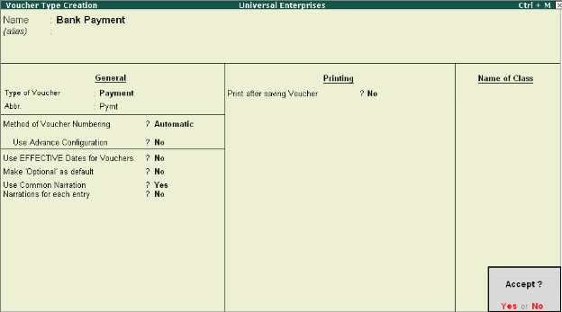</P>
<P STYLE="margin-bottom: 0.14in"><BR><BR>
</P>
<P STYLE="margin-bottom: 0.14in"><FONT COLOR="#000000"><B><FONT SIZE=3 STYLE="font-size: 11pt">1.2
Flexible Voucher Numbering</FONT></B></FONT></P>
<P STYLE="margin-bottom: 0.14in">Tally.ERP 9 also allows you to set
the voucher numbering as per your needs, which is either automatic or
manual or none. i.e., either from the beginning of every day, month,
week, year or never.</P>
<P STYLE="margin-bottom: 0.14in"> <FONT FACE="Arial, serif">Specify
the </FONT><FONT FACE="Arial, serif"><B>Method of Voucher Numbering</B></FONT></P>
<P STYLE="margin-bottom: 0.14in">                                    
  
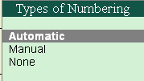</P>
<P STYLE="margin-bottom: 0.14in"><FONT COLOR="#000000"><B><FONT SIZE=3 STYLE="font-size: 11pt">1.3
Flexible classification of Account Heads / Chart of Accounts</FONT></B></FONT></P>
<P STYLE="margin-bottom: 0.14in">In Tally.ERP 9, there are 28
predefined groups which are widely used in Chart of Accounts of many
trading organizations. Out of these, 15 groups are <B>Primary Groups
</B>and the remaining 13 are <B>Sub-Groups</B>. Among the 15
predefined groups, 9 Groups are <B>Balance Sheet </B>items and the
remaining 6 groups are <B>Profit &amp; Loss A/c </B>items. However,
you may also alter the nomenclature of these predefined 28 Groups.</P>
<P STYLE="margin-bottom: 0.14in">Tally.ERP 9 allows you to define
Account heads and groups as per your requirements, thereby
facilitating multiple structural grouping.</P>
<P STYLE="margin-bottom: 0.14in"><B>For Eg., </B>You can have
debtor's based on geographies viz., North Debtors, South Debtors,
East Debtors &amp; West Debtors and further subgroups based on states
 i.e., Karnataka Debtors, Mahar-ashtra Debtors, Tamil Nadu Debtors.
The states can also be classified into cities and so on.</P>
<P STYLE="margin-bottom: 0.14in"><BR><BR>
</P>
<P STYLE="margin-bottom: 0.14in">------------------------------------------------------------------------------------------------------------------------------------------</P>
<P STYLE="margin-bottom: 0.14in"><BR><BR>
</P>
<P STYLE="margin-bottom: 0.14in"><BR><BR>
</P>
<P STYLE="margin-bottom: 0.14in"><BR><BR>
</P>
<P STYLE="margin-bottom: 0.14in"><BR><BR>
</P>
<P STYLE="margin-bottom: 0.14in"><BR><BR>
</P>
<P STYLE="margin-bottom: 0.14in"><BR><BR>
</P>
<P STYLE="margin-bottom: 0.14in"><BR><BR>
</P>
<P STYLE="margin-bottom: 0.14in"><BR><BR>
</P>
<P STYLE="margin-bottom: 0.14in"><BR><BR>
</P>
<P STYLE="margin-bottom: 0.14in"><FONT COLOR="#000000"><FONT SIZE=4><B>1.2
Books &amp; Registers</B></FONT></FONT></P>
<P STYLE="margin-bottom: 0.14in">Tally.ERP 9 provides you capability
to generate various books and registers for any specific period viz.,
month, date, and year and as on date. In Tally.ERP 9, once voucher
entry is made, the transactions are automatically &amp; immediately
in the Day Book and other Books of Accounts without any additional
effort.</P>
<P STYLE="margin-bottom: 0.14in"><FONT COLOR="#000000"><B><FONT SIZE=3 STYLE="font-size: 11pt">1.2.1
Cash Book</FONT></B></FONT></P>
<P STYLE="margin-bottom: 0.14in"><FONT COLOR="#000000"><FONT FACE="Arial, serif">To
generate </FONT></FONT><FONT COLOR="#000000"><FONT FACE="Arial, serif"><B>Cash
Book, </B></FONT></FONT>
</P>
<P STYLE="margin-bottom: 0.14in"><FONT FACE="Arial, serif"><I>Go to
</I></FONT><FONT FACE="Arial, serif"><I><B>Gateway of Tally &gt;
Display &gt; Account Books &gt; Cash / Bank Book(s) </B></I></FONT>
</P>
<P STYLE="margin-bottom: 0.14in"><FONT FACE="Arial, serif">Select
the required </FONT><FONT FACE="Arial, serif"><B>Cash </B></FONT><FONT FACE="Arial, serif">Ledger
Account</FONT></P>
<P STYLE="margin-bottom: 0.14in"> <FONT FACE="Arial, serif">Press
</FONT><FONT FACE="Arial, serif"><B>Enter </B></FONT><FONT FACE="Arial, serif">on
the required month to view Cash transactions for a month</FONT></P>
<P STYLE="margin-bottom: 0.14in">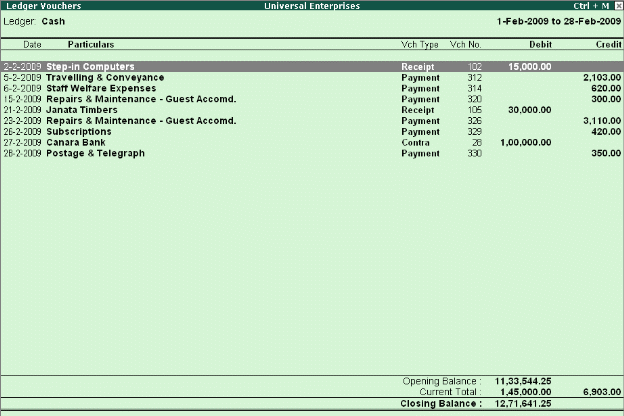</P>
<P STYLE="margin-bottom: 0.14in"><BR><BR>
</P>
<P STYLE="margin-left: 1.61in; margin-bottom: 2.31in; line-height: 100%">
<BR><BR>
</P>
<P STYLE="margin-top: 0.11in; margin-bottom: 0.07in; line-height: 100%">
<BR><BR>
</P>
<P STYLE="margin-bottom: 0.14in"><FONT COLOR="#000000"><B><FONT SIZE=3 STYLE="font-size: 11pt">1.2.2
Bank Book</FONT></B></FONT></P>
<P STYLE="margin-bottom: 0.14in"><FONT COLOR="#000000"><FONT FACE="Arial, serif">To
generate </FONT></FONT><FONT COLOR="#000000"><FONT FACE="Arial, serif"><B>Bank
Book, </B></FONT></FONT>
</P>
<P STYLE="margin-bottom: 0.14in"><FONT FACE="Arial, serif"><I>Go to
</I></FONT><FONT FACE="Arial, serif"><I><B>Gateway of Tally &gt;
Display &gt; Account Books &gt; Cash / Bank Book(s)</B></I></FONT></P>
<P STYLE="margin-bottom: 0.14in"> <FONT FACE="Arial, serif">Select
the required </FONT><FONT FACE="Arial, serif"><B>Bank Account </B></FONT>
</P>
<P STYLE="margin-bottom: 0.14in"><FONT FACE="Arial, serif">Press
</FONT><FONT FACE="Arial, serif"><B>Enter </B></FONT><FONT FACE="Arial, serif">on
the required month to view Bank transactions for a month</FONT></P>
<P STYLE="margin-bottom: 0.14in">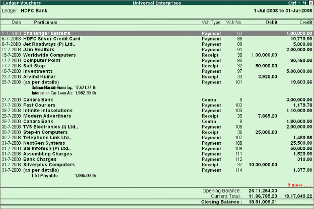</P>
<P STYLE="margin-bottom: 0.14in"><BR><BR>
</P>
<P STYLE="margin-left: 1.61in; margin-bottom: 2.31in; line-height: 100%">
<BR><BR>
</P>
<P STYLE="margin-top: 0.11in; margin-bottom: 0.07in; line-height: 100%">
<BR><BR>
</P>
<P STYLE="margin-bottom: 0.14in"><FONT COLOR="#000000"><B><FONT SIZE=3 STYLE="font-size: 11pt">1.2.3
Purchase Register</FONT></B></FONT></P>
<P STYLE="margin-bottom: 0.14in"><FONT COLOR="#000000"><FONT FACE="Arial, serif">To
generate </FONT></FONT><FONT COLOR="#000000"><FONT FACE="Arial, serif"><B>Purchase
Register, </B></FONT></FONT>
</P>
<P STYLE="margin-bottom: 0.14in"><FONT FACE="Arial, serif"><I>Go to
</I></FONT><FONT FACE="Arial, serif"><I><B>Gateway of Tally &gt;
Display &gt; Account Books &gt; Purchase Register </B></I></FONT>
</P>
<P STYLE="margin-bottom: 0.14in"><FONT FACE="Arial, serif">Press
</FONT><FONT FACE="Arial, serif"><B>Enter </B></FONT><FONT FACE="Arial, serif">on
the required month to view Purchase Transactions for a month</FONT></P>
<P STYLE="margin-bottom: 0.14in">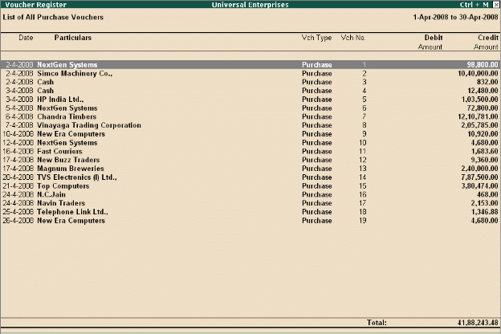</P>
<P STYLE="margin-left: 1.61in; margin-bottom: 2.31in; line-height: 100%">
<BR><BR>
</P>
<P STYLE="margin-top: 0.11in; margin-bottom: 0.07in; line-height: 100%">
<BR><BR>
</P>
<P STYLE="margin-right: 0.62in; margin-top: 0.08in; margin-bottom: 0.07in; line-height: 100%">
<FONT COLOR="#000000"><FONT FACE="Arial, serif"><FONT SIZE=3 STYLE="font-size: 11pt"><B>1.2.4
Sales Register</B></FONT></FONT></FONT></P>
<P ALIGN=JUSTIFY STYLE="margin-top: 0.03in; margin-bottom: 0.07in; line-height: 100%">
<FONT COLOR="#000000"><FONT FACE="Arial, serif">To generate </FONT></FONT><FONT COLOR="#000000"><FONT FACE="Arial, serif"><B>Sales
Register, </B></FONT></FONT>
</P>
<P STYLE="margin-bottom: 0.14in"><FONT FACE="Arial, serif"><I>Go to
</I></FONT><FONT FACE="Arial, serif"><I><B>Gateway of Tally &gt;
Display &gt; Account Books &gt; Sales Register</B></I></FONT></P>
<P STYLE="margin-bottom: 0.14in"> <FONT FACE="Arial, serif">Press
</FONT><FONT FACE="Arial, serif"><B>Enter </B></FONT><FONT FACE="Arial, serif">on
the required month to view Sales Transactions for a month</FONT></P>
<P STYLE="margin-bottom: 0.14in">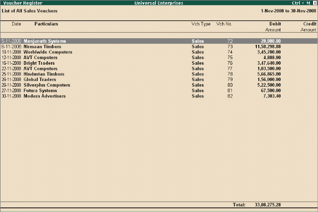</P>
<P STYLE="margin-left: 1.61in; margin-bottom: 2.31in; line-height: 100%">
<BR><BR>
</P>
<P STYLE="margin-top: 0.11in; margin-bottom: 0.07in; line-height: 100%">
<BR><BR>
</P>
<P STYLE="margin-right: 0.62in; margin-top: 0.08in; margin-bottom: 0.07in; line-height: 100%">
<BR><BR>
</P>
<P STYLE="margin-right: 0.62in; margin-top: 0.08in; margin-bottom: 0.07in; line-height: 100%">
<BR><BR>
</P>
<P STYLE="margin-right: 0.62in; margin-top: 0.08in; margin-bottom: 0.07in; line-height: 100%">
<FONT COLOR="#000000"><FONT FACE="Arial, serif"><FONT SIZE=3 STYLE="font-size: 11pt"><B>1.2.5
Journal Register</B></FONT></FONT></FONT></P>
<P ALIGN=JUSTIFY STYLE="margin-top: 0.03in; margin-bottom: 0.07in; line-height: 100%">
<FONT COLOR="#000000"><FONT FACE="Arial, serif">To generate </FONT></FONT><FONT COLOR="#000000"><FONT FACE="Arial, serif"><B>Journal
Register, </B></FONT></FONT>
</P>
<P STYLE="margin-bottom: 0.14in"><FONT FACE="Arial, serif"><I>Go to
</I></FONT><FONT FACE="Arial, serif"><I><B>Gateway of Tally &gt;
Display &gt; Account Books &gt; Journal Register &gt; Journal
Register </B></I></FONT><FONT FACE="Wingdings, serif"><FONT SIZE=1></FONT></FONT><FONT FACE="Arial, serif">Press
</FONT><FONT FACE="Arial, serif"><B>Enter </B></FONT><FONT FACE="Arial, serif">on
the required month to view Journal Entries for a month.</FONT></P>
<P STYLE="margin-bottom: 0.14in">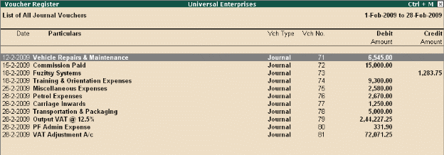</P>
<P STYLE="margin-bottom: 0.14in"><FONT COLOR="#000000"><FONT FACE="Arial, serif"><FONT SIZE=3 STYLE="font-size: 11pt"><B>1.2.6
Debit Note Register</B></FONT></FONT></FONT></P>
<P ALIGN=JUSTIFY STYLE="margin-top: 0.03in; margin-bottom: 0.07in; line-height: 100%">
<FONT COLOR="#000000"><FONT FACE="Arial, serif">To generate </FONT></FONT><FONT COLOR="#000000"><FONT FACE="Arial, serif"><B>Debit
Note Register</B></FONT></FONT><FONT COLOR="#000000"><FONT FACE="Arial, serif">,
</FONT></FONT>
</P>
<P STYLE="margin-bottom: 0.14in"><FONT FACE="Arial, serif"><I>Go to
</I></FONT><FONT FACE="Arial, serif"><I><B>Gateway of Tally &gt;
Display &gt; Account Books &gt; Journal Register &gt; Debit Note
Register </B></I></FONT><FONT FACE="Wingdings, serif"><FONT SIZE=1></FONT></FONT><FONT FACE="Arial, serif">Press
</FONT><FONT FACE="Arial, serif"><B>Enter </B></FONT><FONT FACE="Arial, serif">on
the required month to view Debit Notes for a month.</FONT></P>
<P STYLE="margin-bottom: 0.14in">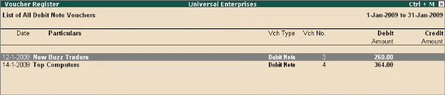</P>
<P STYLE="margin-right: 0.62in; margin-top: 0.08in; margin-bottom: 0.07in; line-height: 100%">
<BR><BR>
</P>
<P STYLE="margin-right: 0.62in; margin-top: 0.08in; margin-bottom: 0.07in; line-height: 100%">
<BR><BR>
</P>
<P STYLE="margin-right: 0.62in; margin-top: 0.08in; margin-bottom: 0.07in; line-height: 100%">
<BR><BR>
</P>
<P STYLE="margin-right: 0.62in; margin-top: 0.08in; margin-bottom: 0.07in; line-height: 100%">
<BR><BR>
</P>
<P STYLE="margin-right: 0.62in; margin-top: 0.08in; margin-bottom: 0.07in; line-height: 100%">
<BR><BR>
</P>
<P STYLE="margin-right: 0.62in; margin-top: 0.08in; margin-bottom: 0.07in; line-height: 100%">
<BR><BR>
</P>
<P STYLE="margin-right: 0.62in; margin-top: 0.08in; margin-bottom: 0.07in; line-height: 100%">
<BR><BR>
</P>
<P STYLE="margin-right: 0.62in; margin-top: 0.08in; margin-bottom: 0.07in; line-height: 100%">
<BR><BR>
</P>
<P STYLE="margin-right: 0.62in; margin-top: 0.08in; margin-bottom: 0.07in; line-height: 100%">
<BR><BR>
</P>
<P STYLE="margin-right: 0.62in; margin-top: 0.08in; margin-bottom: 0.07in; line-height: 100%">
<BR><BR>
</P>
<P STYLE="margin-right: 0.62in; margin-top: 0.08in; margin-bottom: 0.07in; line-height: 100%">
<FONT COLOR="#000000"><FONT FACE="Arial, serif"><FONT SIZE=3 STYLE="font-size: 11pt"><B>1.2.7
Credit Note Register </B></FONT></FONT></FONT>
</P>
<P ALIGN=JUSTIFY STYLE="margin-top: 0.03in; margin-bottom: 0.07in; line-height: 100%">
<FONT COLOR="#000000"><FONT FACE="Arial, serif">To generate </FONT></FONT><FONT COLOR="#000000"><FONT FACE="Arial, serif"><B>Credit
Note Register, </B></FONT></FONT>
</P>
<P STYLE="margin-bottom: 0.14in"><FONT FACE="Arial, serif"><I>Go to
</I></FONT><FONT FACE="Arial, serif"><I><B>Gateway of Tally &gt;
Display &gt; Account Books &gt; Journal Register &gt; Credit Note
Register</B></I></FONT></P>
<P STYLE="margin-bottom: 0.14in"> <FONT FACE="Arial, serif">Press
</FONT><FONT FACE="Arial, serif"><B>Enter </B></FONT><FONT FACE="Arial, serif">on
the required month to view Credit Notes for a month or press </FONT><FONT FACE="Arial, serif"><B>F2
</B></FONT><FONT FACE="Arial, serif">and specify the period</FONT></P>
<P STYLE="margin-bottom: 0.14in">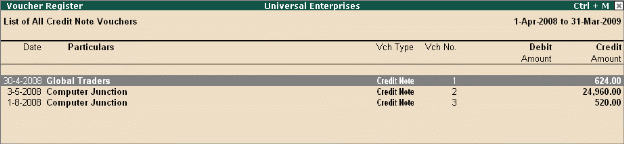</P>
<P STYLE="margin-right: 0.62in; margin-top: 0.08in; margin-bottom: 0.07in; line-height: 100%">
<FONT COLOR="#000000"><FONT FACE="Arial, serif"><FONT SIZE=3 STYLE="font-size: 11pt"><B>1.2.8
Day Book</B></FONT></FONT></FONT></P>
<P ALIGN=JUSTIFY STYLE="margin-top: 0.03in; margin-bottom: 0.07in; line-height: 100%">
<FONT COLOR="#000000"><FONT FACE="Arial, serif">To generate </FONT></FONT><FONT COLOR="#000000"><FONT FACE="Arial, serif"><B>Day
Book, </B></FONT></FONT>
</P>
<P STYLE="margin-bottom: 0.14in"><FONT FACE="Arial, serif"><I>Go to
</I></FONT><FONT FACE="Arial, serif"><I><B>Gateway of Tally &gt;
Display &gt; Day Book </B></I></FONT><FONT FACE="Arial, serif">Specify
the required period to view transactions entered for that particular
day, week and year or for any specified period.</FONT></P>
<P STYLE="margin-bottom: 0.14in">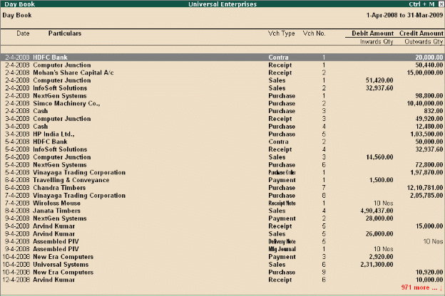</P>
<P STYLE="margin-top: 0.11in; margin-bottom: 0.07in; line-height: 100%">
<FONT FACE="Arial, serif"><FONT SIZE=3><FONT COLOR="#000000"><FONT SIZE=4><B>1.3
Statements of Accounts </B></FONT></FONT></FONT></FONT>
</P>
<P STYLE="margin-bottom: 0.14in">Tally.ERP 9 provides you capability
to generate, print, mail or upload various Financial Statements and
reports viz., Balance Sheet, Profit &amp; Loss A/c, Trial Balance,
Cash Flow, Fund Flow, Receivables, Payables &amp; Stock Statements
and so on.</P>
<P STYLE="margin-bottom: 0.14in"><FONT COLOR="#000000"><B><FONT SIZE=3 STYLE="font-size: 11pt">1.3.1
Receivables and Payables Management</FONT></B></FONT></P>
<P STYLE="margin-bottom: 0.14in">Accounts Receivables are the amounts
that you are to receive from the sundry debtors while Accounts
Payables are the amounts you have to pay to sundry creditors.
Tally.ERP 9 provides complete bill wise information of amounts
receivable as well as payable, either on party wise, group wise or
Billwise. This feature tracks bills, payments/receipts including
advances on one-to-one basis.</P>
<P ALIGN=JUSTIFY STYLE="margin-top: 0.03in; margin-bottom: 0.07in; line-height: 100%">
<FONT COLOR="#000000"><FONT FACE="Arial, serif">To view </FONT></FONT><FONT COLOR="#000000"><FONT FACE="Arial, serif"><B>Outstandings:
</B></FONT></FONT>
</P>
<P STYLE="margin-bottom: 0.14in"><FONT FACE="Arial, serif">Set
</FONT><FONT FACE="Arial, serif"><B>Maintain Bill-wise Details </B></FONT><FONT FACE="Arial, serif">to
</FONT><FONT FACE="Arial, serif"><B>Yes </B></FONT><FONT FACE="Arial, serif">in
</FONT><FONT FACE="Arial, serif"><B>F11: Accounting Features</B></FONT></P>
<P STYLE="margin-bottom: 0.14in"><FONT FACE="Arial, serif">Create
a </FONT><FONT FACE="Arial, serif"><B>Party </B></FONT><FONT FACE="Arial, serif">(Ledger
A/c) under </FONT><FONT FACE="Arial, serif"><B>Sundry Debtors /
Sundry Creditors </B></FONT><FONT FACE="Arial, serif">group</FONT></P>
<P STYLE="margin-bottom: 0.14in"><FONT FACE="Arial, serif">Set
</FONT><FONT FACE="Arial, serif"><B>Maintain balances bill by bill </B></FONT><FONT FACE="Arial, serif">to
</FONT><FONT FACE="Arial, serif"><B>Yes </B></FONT><FONT FACE="Arial, serif">for
the parties during ledger creation </FONT>
</P>
<P STYLE="margin-bottom: 0.14in"><FONT FACE="Arial, serif">Go to
</FONT><FONT FACE="Arial, serif"><B>Gateway of Tally &gt; Accounting
Vouchers &gt; Sales (F8) or Purchase (F9) </B></FONT><FONT FACE="Arial, serif">accord-ingly
and enter the transaction by specifying a </FONT><FONT FACE="Arial, serif"><B>Bill
reference No</B></FONT><FONT FACE="Arial, serif">. along with due
dates for the amount to be received or paid in the </FONT><FONT FACE="Arial, serif"><B>Bill
Allocations for </B></FONT><FONT FACE="Arial, serif">screen </FONT>
</P>
<P STYLE="margin-bottom: 0.14in"><FONT FACE="Arial, serif">To view
</FONT><FONT FACE="Arial, serif"><B>Receivables / Payables Reports </B></FONT><FONT FACE="Arial, serif"><I>Go
to </I></FONT><FONT FACE="Arial, serif"><I><B>Gateway of Tally &gt;
Display &gt; Statement of Accounts &gt; Outstandings &gt; Receivables
</B></I></FONT><FONT FACE="Arial, serif"><I>(to view due to the
company). </I></FONT><FONT FACE="Arial, serif">The report displays
bill-by-bill outstanding for all the parties with the pending amount
alongwith the due date. </FONT>
</P>
<P STYLE="margin-bottom: 0.14in">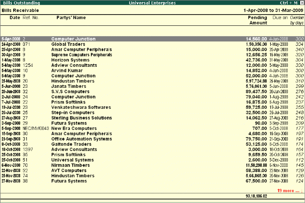</P>
<P STYLE="margin-bottom: 0.14in"><FONT COLOR="#000000"><FONT FACE="Arial, serif">To
view </FONT></FONT><FONT COLOR="#000000"><FONT FACE="Arial, serif"><B>individual
Party wise outstanding, </B></FONT></FONT>
</P>
<P STYLE="margin-bottom: 0.14in"><FONT FACE="Arial, serif">Select
</FONT><FONT FACE="Arial, serif"><B>Ledger </B></FONT><FONT FACE="Arial, serif">in
the </FONT><FONT FACE="Arial, serif"><B>Outstandings </B></FONT><FONT FACE="Arial, serif">menu,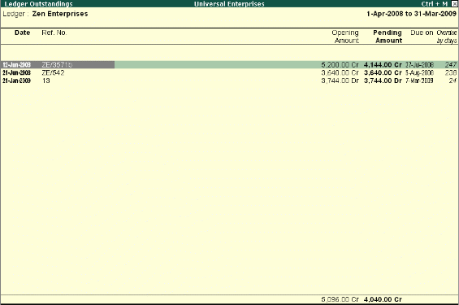</FONT></P>
<P STYLE="margin-bottom: 0.14in">You will get a report displaying
bill-by-bill details of all outstandings for the concerned party
along with the total outstanding amount. You can also view details of
cleared bills, by using the options in the button bars.</P>
<P STYLE="margin-bottom: 0.14in"><FONT COLOR="#000000"><FONT FACE="Arial, serif"><FONT SIZE=3 STYLE="font-size: 11pt"><B>1.3.3
Columnar Reports </B></FONT></FONT></FONT>
</P>
<P ALIGN=JUSTIFY STYLE="margin-top: 0.03in; margin-bottom: 0.07in; line-height: 100%">
<FONT COLOR="#000000"><FONT FACE="Arial, serif">To view </FONT></FONT><FONT COLOR="#000000"><FONT FACE="Arial, serif"><B>Columnar
Reports</B></FONT></FONT><FONT COLOR="#000000"><FONT FACE="Arial, serif">,
Tally.ERP 9 provides columnar reports for transactions of Sales,
Purchase and Journal as well as specific Ledgers and Cash / Bank
Books. </FONT></FONT>
</P>
<P STYLE="margin-bottom: 0.14in"><FONT FACE="Arial, serif"><I>Go to
</I></FONT><FONT FACE="Arial, serif"><I><B>Gateway of Tally &gt;
Display &gt; Account Books</B></I></FONT></P>
<P STYLE="margin-bottom: 0.14in"><FONT FACE="Arial, serif">Select
a register </FONT><FONT FACE="Arial, serif"><B>(Sales/Purchase/Journal)</B></FONT><FONT FACE="Arial, serif">.
</FONT>
</P>
<P STYLE="margin-bottom: 0.14in"><FONT FACE="Arial, serif">Drill
down to the </FONT><FONT FACE="Arial, serif"><B>List of Vouchers</B></FONT></P>
<P STYLE="margin-bottom: 0.14in"><FONT FACE="Arial, serif">Press
</FONT><FONT FACE="Arial, serif"><B>F5 </B></FONT><FONT FACE="Arial, serif">to
view columnar reports as shown in the figure below (This is an option
to choose the ledger accounts or configure the columns to contain the
required information)</FONT></P>
<P STYLE="margin-bottom: 0.14in">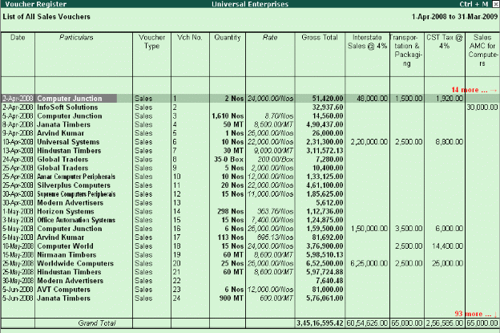
 
</P>
<P STYLE="margin-bottom: 0.14in">Different type of reports can be
generated for each of the primary statement/ report generated in
Tally.ERP 9. It is to be noted that Tally.ERP 9 provides the columnar
comparison of data for different periods and budgets only for the
Group Summary.</P>
<P STYLE="margin-top: 0.11in; margin-bottom: 0.07in; line-height: 100%">
<BR><BR>
</P>
<P STYLE="margin-top: 0.11in; margin-bottom: 0.07in; line-height: 100%">
<FONT FACE="Arial, serif"><FONT SIZE=3><FONT COLOR="#000000"><FONT SIZE=4><B>1.4
Credit Limits </B></FONT></FONT></FONT></FONT>
</P>
<P STYLE="margin-bottom: 0.14in">Tally.ERP 9 provides you with the
feature to set threshold limits for the trading transactions with
your Sundry Debtors. On setting the Credit Limits, transactions
beyond the specified limit are restricted. This feature is very
significant in reducing potential bad debts.</P>
<P STYLE="margin-bottom: 0.14in">To activate <B>Credit limits</B>,</P>
<P STYLE="margin-bottom: 0.14in"> Set <B>Maintain Budgets &amp;
Controls </B>to <B>Yes </B>in <B>F11: Accounting Features </B>To set
<B>Credit limits</B>, <I>Go to </I><I><B>Gateway of Tally &gt;
Accounts Info. &gt; Ledgers &gt;Credit Limits,</B></I></P>
<P STYLE="margin-bottom: 0.14in"> Select the required <B>Group</B>.
<FONT FACE="Wingdings, serif"><FONT SIZE=1></FONT></FONT>Specify
the <B>Credit limit </B>for each ledger account and the applicable
credit period</P>
<P STYLE="margin-bottom: 0.14in">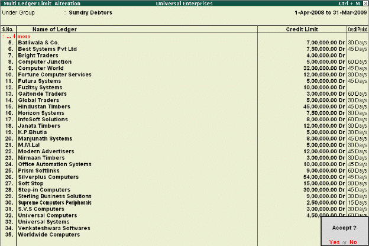</P>
<P STYLE="margin-bottom: 0.14in"><BR><BR>
</P>
<P STYLE="margin-bottom: 0.14in"><BR><BR>
</P>
<P STYLE="margin-bottom: 0.14in"><BR><BR>
</P>
<P STYLE="margin-bottom: 0.14in"><BR><BR>
</P>
<P STYLE="margin-bottom: 0.14in"><BR><BR>
</P>
<P STYLE="margin-bottom: 0.14in"><FONT COLOR="#000000"><FONT SIZE=4><B>1.5
Bank Reconciliation </B></FONT></FONT>
</P>
<P STYLE="margin-bottom: 0.14in">Tally.ERP 9 provides you the
facility to reconcile the transactions of your Bank Book with the
Bank Statement and instantly displays the Balance at Bank and as per
the Bank Book, this facility significantly helps in planning your
payouts. The reconciliation of bank transaction using the reconcile
feature is very simple and easy to use, by simply entering the date
of debit / credit of a particular transaction in the Bank.</P>
<P STYLE="margin-bottom: 0.14in"><FONT COLOR="#000000"><FONT FACE="Arial, serif">To
view </FONT></FONT><FONT COLOR="#000000"><FONT FACE="Arial, serif"><B>Bank
Reconciliation Statement:</B></FONT></FONT></P>
<P STYLE="margin-bottom: 0.14in"><I>Go to </I><I><B>Gateway of Tally
&gt; Display &gt; Account Books &gt; Cash/Bank Book</B></I></P>
<P STYLE="margin-bottom: 0.14in"> Select the required <B>Bank
Account </B>and press <B>Enter </B>on the required month (or <B>F2
</B>and specify the required period from which you want to reconcile
your bank accounts)</P>
<P STYLE="margin-bottom: 0.14in"> Press <B>F5: Reconcile </B>
</P>
<P STYLE="margin-bottom: 0.14in"><B>Enter </B>the <B>date of
clearing </B>(date on which the transaction is being debited /
credited) from the Bank Statement. 
</P>
<P STYLE="margin-bottom: 0.14in"></P>
<P STYLE="margin-bottom: 0.14in"><BR><BR>
</P>
<P STYLE="margin-bottom: 0.14in"><BR><BR>
</P>
<P STYLE="margin-bottom: 0.14in"><FONT COLOR="#000000"><FONT SIZE=4><B>1.6
Flexible Reporting</B></FONT></FONT></P>
<P STYLE="margin-bottom: 0.14in">Tally.ERP 9 can be used to generate
financial reports, accounting reports, inventory reports, statutory
reports and management control reports.</P>
<P STYLE="margin-bottom: 0.14in"><FONT COLOR="#000000"><B><FONT SIZE=3 STYLE="font-size: 11pt">1.6.1
Bird's eye View/ Drill Down Display: </FONT></B></FONT>
</P>
<P STYLE="margin-bottom: 0.14in">Tally.ERP 9's unique features
provide you with the required information at a glance. For example-
Ratio Analysis and Statistics provide you with wealth of information
for decision making in a single screen.</P>
<P STYLE="margin-bottom: 0.14in">Go to <B>Gate way of tally</B>&gt;
<B>ratio analysis</B></P>
<P STYLE="margin-bottom: 0.14in">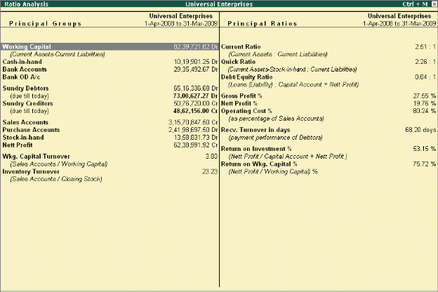</P>
<P STYLE="margin-bottom: 0.14in"><BR><BR>
</P>
<P STYLE="margin-bottom: 0.14in"><BR><BR>
</P>
<P STYLE="margin-bottom: 0.14in"><BR><BR>
</P>
<P STYLE="margin-bottom: 0.14in"><BR><BR>
</P>
<P STYLE="margin-bottom: 0.14in"><BR><BR>
</P>
<P STYLE="margin-bottom: 0.14in"><BR><BR>
</P>
<P STYLE="margin-bottom: 0.14in">Go to <B>Gate ways of tally</B>&gt;
<B>display</B>&gt; <B>statement of accounts</B>&gt; <B>statistics</B></P>
<P STYLE="margin-bottom: 0.14in">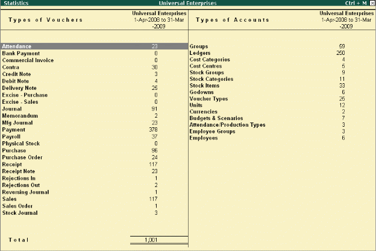</P>
<P STYLE="margin-left: 1.61in; margin-bottom: 2.31in; line-height: 100%">
<BR><BR>
</P>
<P STYLE="margin-top: 0.11in; margin-bottom: 0.07in; line-height: 100%">
<BR><BR>
</P>
<P STYLE="margin-top: 0.08in; margin-bottom: 0.07in; line-height: 100%">
<BR><BR>
</P>
<P STYLE="margin-top: 0.08in; margin-bottom: 0.07in; line-height: 100%">
<BR><BR>
</P>
<P STYLE="margin-top: 0.08in; margin-bottom: 0.07in; line-height: 100%">
<BR><BR>
</P>
<P STYLE="margin-top: 0.08in; margin-bottom: 0.07in; line-height: 100%">
<BR><BR>
</P>
<P STYLE="margin-top: 0.08in; margin-bottom: 0.07in; line-height: 100%">
<BR><BR>
</P>
<P STYLE="margin-top: 0.08in; margin-bottom: 0.07in; line-height: 100%">
<FONT COLOR="#000000"><FONT FACE="Arial, serif"><FONT SIZE=3 STYLE="font-size: 11pt"><B>1.6.4
Voucher and Cheque Printing </B></FONT></FONT></FONT>
</P>
<P ALIGN=JUSTIFY STYLE="margin-top: 0.03in; margin-bottom: 0.07in; line-height: 100%">
<FONT COLOR="#000000"><FONT FACE="Arial, serif">To activate </FONT></FONT><FONT COLOR="#000000"><FONT FACE="Arial, serif"><B>Cheque
printing</B></FONT></FONT><FONT COLOR="#000000"><FONT FACE="Arial, serif">,
Tally.ERP 9 provides you with a facility to print all types of
vouchers. You can print a voucher on save or you can print it later.
It is also possible to print formal receipts and cheques. The real
benefit for a user is that you issue cheques to parties only after
accounting the payment transactions </FONT></FONT>
</P>
<P STYLE="margin-bottom: 0.14in"><FONT FACE="Arial, serif"><I>Go to
</I></FONT><FONT FACE="Arial, serif"><I><B>Gateway of Tally &gt; F11:
Features &gt; F1: Accounting Features</B></I></FONT></P>
<P STYLE="margin-bottom: 0.14in"> <FONT FACE="Arial, serif">Set
</FONT><FONT FACE="Arial, serif"><B>Enable Cheque Printing </B></FONT><FONT FACE="Arial, serif">to
</FONT><FONT FACE="Arial, serif"><B>Yes</B></FONT></P>
<P STYLE="margin-bottom: 0.14in"> <FONT FACE="Arial, serif">Enable
</FONT><FONT FACE="Arial, serif"><B>Set/Alter Cheque Printing
Configuration </B></FONT><FONT FACE="Arial, serif">to </FONT><FONT FACE="Arial, serif"><B>Yes
</B></FONT>
</P>
<P STYLE="margin-bottom: 0.14in"><FONT FACE="Arial, serif"><B>Enter
</B></FONT><FONT FACE="Arial, serif">the </FONT><FONT FACE="Arial, serif"><B>Company
Name on the Cheque </B></FONT><FONT FACE="Arial, serif">(if cheque is
not preprinted with Company Name) </FONT>
</P>
<P STYLE="margin-bottom: 0.14in"><FONT FACE="Arial, serif"><B>Enter
</B></FONT><FONT FACE="Arial, serif">the </FONT><FONT FACE="Arial, serif"><B>Bank
Name </B></FONT><FONT FACE="Arial, serif">(as created in the Ledgers)</FONT></P>
<P STYLE="margin-bottom: 0.14in">                                
</P>
<P STYLE="margin-bottom: 0.14in">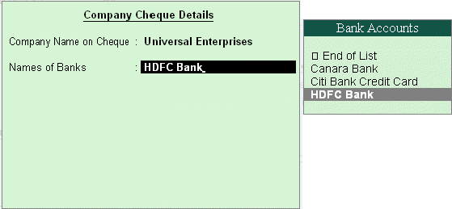
</P>
<P STYLE="margin-bottom: 0.14in"><FONT FACE="Arial, serif"><B>Enter
</B></FONT><FONT FACE="Arial, serif">the </FONT><FONT FACE="Arial, serif"><B>Cheque
Dimensions</B></FONT></P>
<P STYLE="margin-bottom: 0.14in">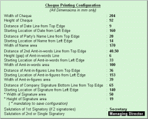Tally.ERP
9 allows you the flexibility to specify the payee's name other than
the ledger account under which the payment is accounted. Once the
voucher is saved, Tally.ERP 9 prompts you to print the cheque.</P>
<P STYLE="margin-bottom: 0.14in"><FONT COLOR="#000000">      <FONT SIZE=5 STYLE="font-size: 20pt"><B>Lesson
2: the best for basic Financial Management</B></FONT></FONT></P>
<P STYLE="margin-top: 0.11in; margin-bottom: 0.07in; line-height: 100%">
<FONT FACE="Arial, serif"><FONT SIZE=3><FONT COLOR="#000000"><FONT SIZE=4><B>2.1
Fund Flows </B></FONT></FONT></FONT></FONT>
</P>
<P STYLE="margin-bottom: 0.14in">A <B>Fund Flow statement </B>reflects
the movement in sources and application of funds which impacts the
business's working capital and cash position. It includes operational
funds, increase and decrease in inventories, creditors/debtors.</P>
<P ALIGN=JUSTIFY STYLE="margin-top: 0.03in; margin-bottom: 0.07in; line-height: 100%">
<FONT FACE="Arial, serif"><FONT SIZE=3><FONT COLOR="#000000"><FONT SIZE=2 STYLE="font-size: 11pt">To
view </FONT></FONT><FONT COLOR="#000000"><FONT SIZE=2 STYLE="font-size: 11pt"><B>Fund
Flow Statement</B></FONT></FONT><FONT COLOR="#000000"><FONT SIZE=2 STYLE="font-size: 11pt">,
</FONT></FONT></FONT></FONT>
</P>
<P STYLE="margin-bottom: 0.14in"><I>Go to </I><I><B>Gateway of Tally
&gt; Display &gt; Cash / Funds Flow &gt; Funds Flow</B></I></P>
<P STYLE="margin-bottom: 0.14in"> Select any <B>month</B></P>
<P STYLE="margin-bottom: 0.14in"> Press <B>Enter</B></P>
<P STYLE="margin-bottom: 0.14in">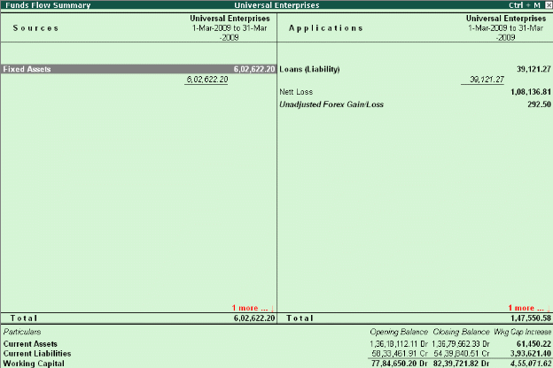</P>
<P STYLE="margin-bottom: 0.14in"><BR><BR>
</P>
<P STYLE="margin-bottom: 0.14in"><BR><BR>
</P>
<P STYLE="margin-bottom: 0.14in"><BR><BR>
</P>
<P STYLE="margin-bottom: 0.14in"><BR><BR>
</P>
<P STYLE="margin-bottom: 0.14in"><BR><BR>
</P>
<P STYLE="margin-top: 0.11in; margin-bottom: 0.07in; line-height: 100%">
<BR><BR>
</P>
<P STYLE="margin-top: 0.11in; margin-bottom: 0.07in; line-height: 100%">
<FONT FACE="Arial, serif"><FONT SIZE=3><FONT COLOR="#000000"><FONT SIZE=4><B>2.2
Payment performance of Debtors (Receivables Turnover) </B></FONT></FONT></FONT></FONT>
</P>
<P STYLE="margin-bottom: 0.14in">Tally.ERP 9 tracks the payment
performance of all debtors and generates report containing
infor-mation in respect of average time taken by the debtors to pay
back their debts.</P>
<P STYLE="margin-bottom: 0.14in"> <FONT FACE="Arial, serif"><B>Using
Receivables formula</B></FONT><FONT FACE="Arial, serif">: Tally.ERP 9
calculates the payment performance of your debtors using the
following formula,</FONT></P>
<P STYLE="margin-bottom: 0.14in"><I><B>Payment performance by
formula: (closing balance / total sales) * nos of days</B></I></P>
<P STYLE="margin-bottom: 0.14in">Or calculates the performance of the
debtors using the <B>actual bill cleared date</B>.</P>
<P STYLE="margin-bottom: 0.14in">To view <B>Receivables turnover</B>,
<I>Go to </I><I><B>Gateway of Tally &gt; Ratio Analysis </B></I>
</P>
<P STYLE="margin-bottom: 0.14in">Select <B>Recv. Turnover in days
(payment performance of Debtors)</B></P>
<P STYLE="margin-bottom: 0.14in"> Press <B>Alt+F1 </B>for
detailed view</P>
<P STYLE="margin-bottom: 0.14in">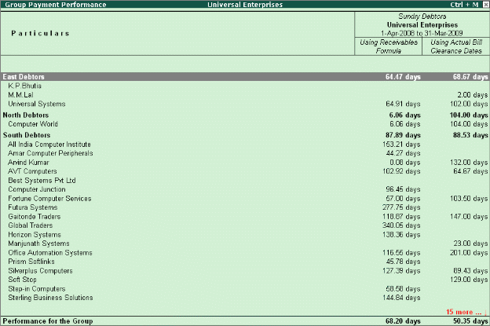</P>
<P STYLE="margin-top: 0.11in; margin-bottom: 0.07in; line-height: 100%">
<FONT FACE="Arial, serif"><FONT SIZE=3><FONT COLOR="#000000"><FONT SIZE=4><B>2.3
Branch Accounting </B></FONT></FONT></FONT></FONT>
</P>
<P STYLE="margin-bottom: 0.14in">Tally.ERP 9 provides you a seamless
way of handling branch accounts. Transactions between branches or
offices are accounted by debiting the receiving branches accounts and
crediting the branches providing the service/products. These
accounting entries result in a nil effect on the HO's account books
when the branch accounts are consolidated. If there is a difference
in the account, it is reconciled through a process of branch
reconciliation.</P>
<P STYLE="margin-bottom: 0.14in"> For example, create two branch
ledgers, <B>Branch A </B>and <B>Branch B</B>. You may account the
transfer of funds from <B>Branch A </B>to <B>Branch B </B>in the
books of accounts, by debiting <B>Branch B </B>which in turn, credits
<B>Branch A </B>in its books. There is no net effect on the combined
books, when the accounts of the two branches are consolidated.</P>
<P STYLE="margin-top: 0.11in; margin-bottom: 0.07in; line-height: 100%">
<FONT FACE="Arial, serif"><FONT SIZE=3><FONT COLOR="#000000"><FONT SIZE=4><B>2.4
Flexible Period Accounting </B></FONT></FONT></FONT></FONT>
</P>
<P STYLE="margin-bottom: 0.14in">Tally.ERP 9 is one of the most
flexible accounting packages available and this can be illustrated by
the fact that it can handle multiple periods in a single company.
Once a company is created you can specify any range of dates and
obtain reports for that period. These date range can also be across
multiple financial years. i.e. you can get a report for monthly,
quarterly, half-yearly or annually or for 18 months or 24 months and
so on.</P>
<P STYLE="margin-bottom: 0.14in"><B>Example: </B><I>Go to </I><I><B>Gateway
of Tally &gt; Profit &amp; Loss A/c</B></I><I>.</I></P>
<P STYLE="margin-bottom: 0.14in"> Select <B>F2: Period </B>and
specify the <B>date range </B>to view the report.</P>
<P STYLE="margin-bottom: 0.14in">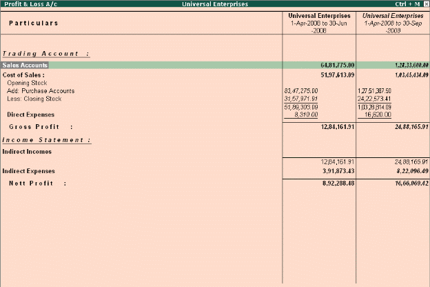</P>
<P STYLE="margin-bottom: 0.14in"><BR><BR>
</P>
<P STYLE="margin-bottom: 0.14in"><BR><BR>
</P>
<P STYLE="margin-bottom: 0.14in"><BR><BR>
</P>
<P STYLE="margin-top: 0.11in; margin-bottom: 0.07in; line-height: 100%">
<BR><BR>
</P>
<P STYLE="margin-top: 0.11in; margin-bottom: 0.07in; line-height: 100%">
<FONT FACE="Arial, serif"><FONT SIZE=3><FONT COLOR="#000000"><FONT SIZE=4><B>2.5
Budgeting and Control </B></FONT></FONT></FONT></FONT>
</P>
<P ALIGN=JUSTIFY STYLE="margin-top: 0.03in; margin-bottom: 0.07in; line-height: 100%">
<FONT FACE="Arial, serif"><FONT SIZE=3><FONT COLOR="#000000"><FONT SIZE=2 STYLE="font-size: 11pt">To
configure for </FONT></FONT><FONT COLOR="#000000"><FONT SIZE=2 STYLE="font-size: 11pt"><B>budgets</B></FONT></FONT><FONT COLOR="#000000"><FONT SIZE=2 STYLE="font-size: 11pt">,
</FONT></FONT></FONT></FONT>
</P>
<P ALIGN=JUSTIFY STYLE="margin-top: 0.03in; margin-bottom: 0.07in; line-height: 100%">
<FONT FACE="Arial, serif"><FONT SIZE=3><FONT COLOR="#000000"><FONT SIZE=2 STYLE="font-size: 11pt">To
create </FONT></FONT><FONT COLOR="#000000"><FONT SIZE=2 STYLE="font-size: 11pt"><B>budgets</B></FONT></FONT><FONT COLOR="#000000"><FONT SIZE=2 STYLE="font-size: 11pt">,
</FONT></FONT><FONT COLOR="#000000"><FONT SIZE=2 STYLE="font-size: 11pt">Businesses
need to control their expenses based on income levels and monitor
variances. Budgets in Tally.ERP 9 helps you compare the actual
financial performance versus budgeted figures and obtain variance
reports. You can define multiple budgets (e.g. Optimistic Budget,
Realistic Budget) or even create budgets for different periods. The
budget values can be defined for each Group as well as for all
Ledgers.</FONT></FONT></FONT></FONT></P>
<P ALIGN=JUSTIFY STYLE="margin-top: 0.03in; margin-bottom: 0.07in; line-height: 100%">
<FONT COLOR="#000000"> </FONT><FONT FACE="Arial, serif"><FONT SIZE=3><FONT COLOR="#000000"><FONT SIZE=2 STYLE="font-size: 11pt"><I>Go
to </I></FONT></FONT><FONT COLOR="#000000"><FONT SIZE=2 STYLE="font-size: 11pt"><I><B>Gateway
of Tally &gt; F11: Features &gt; F1: Accounting Features</B></I></FONT></FONT></FONT></FONT></P>
<P ALIGN=JUSTIFY STYLE="margin-top: 0.03in; margin-bottom: 0.07in; line-height: 100%">
<FONT COLOR="#000000"> </FONT><FONT COLOR="#000000"></FONT><FONT FACE="Arial, serif"><FONT SIZE=3><FONT COLOR="#000000"><FONT SIZE=2 STYLE="font-size: 11pt">Set
parameter </FONT></FONT><FONT COLOR="#000000"><FONT SIZE=2 STYLE="font-size: 11pt"><B>Maintain
Budgets and Controls </B></FONT></FONT><FONT COLOR="#000000"><FONT SIZE=2 STYLE="font-size: 11pt">to
</FONT></FONT><FONT COLOR="#000000"><FONT SIZE=2 STYLE="font-size: 11pt"><B>Yes
</B></FONT></FONT></FONT></FONT>
</P>
<P STYLE="margin-bottom: 0.14in"><I>Go to </I><I><B>Gateway of Tally
&gt; Accounts Info. &gt; Budgets &gt; Create</B></I></P>
<P STYLE="margin-bottom: 0.14in"> Specify a <B>name </B>for the
budget</P>
<P STYLE="margin-bottom: 0.14in"> Specify a <B>date range </B>for
the budget</P>
<P STYLE="margin-bottom: 0.14in">   <FONT FACE="Arial, serif">Set
</FONT><FONT FACE="Arial, serif"><B>Yes </B></FONT><FONT FACE="Arial, serif">to
</FONT><FONT FACE="Arial, serif"><B>Groups / Ledgers </B></FONT><FONT FACE="Arial, serif">and
assign budget to selected groups/ledgers</FONT></P>
<P STYLE="margin-bottom: 0.14in"><FONT COLOR="#000000"><FONT SIZE=2 STYLE="font-size: 11pt">To
view </FONT></FONT><FONT COLOR="#000000"><FONT SIZE=2 STYLE="font-size: 11pt"><B>budget
reports</B></FONT></FONT><FONT COLOR="#000000"><FONT SIZE=2 STYLE="font-size: 11pt">,
</FONT></FONT>
</P>
<P STYLE="margin-bottom: 0.14in">Select any report (Balance
Sheet, Profit and Loss A/c, Trial Balance) <FONT FACE="Wingdings, serif"><FONT SIZE=1></FONT></FONT>Select
<B>Alt + C (New Column) </B><FONT FACE="Wingdings, serif"><FONT SIZE=1></FONT></FONT>Specify
details for <B>period</B>, <B>Currency </B>and <B>Method of Stock
Valuation</B>. (Default or as per requirement) <FONT FACE="Wingdings, serif"><FONT SIZE=1></FONT></FONT>Select
the created <B>budget </B>name for <B>Types of Value to show </B><FONT FACE="Wingdings, serif"><FONT SIZE=1></FONT></FONT>Set
<B>Show Variance </B>to <B>No</B></P>
<P STYLE="margin-bottom: 0.14in">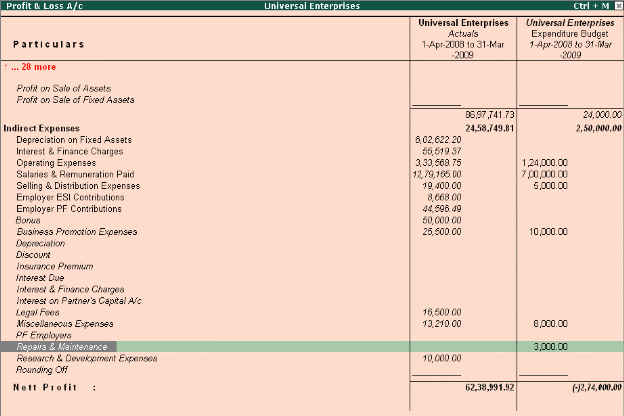</P>
<P STYLE="margin-bottom: 0.14in"><FONT COLOR="#000000"><FONT SIZE=4><B>2.7
Ratio Analysis </B></FONT></FONT>
</P>
<P ALIGN=JUSTIFY STYLE="margin-top: 0.03in; margin-bottom: 0.07in; line-height: 100%">
<FONT FACE="Arial, serif"><FONT SIZE=3><FONT COLOR="#000000"><FONT SIZE=2 STYLE="font-size: 11pt">To
View </FONT></FONT><FONT COLOR="#000000"><FONT SIZE=2 STYLE="font-size: 11pt"><B>Ratio
Analysis Report</B></FONT></FONT><FONT COLOR="#000000"><FONT SIZE=2 STYLE="font-size: 11pt">,
</FONT></FONT><FONT COLOR="#000000"><FONT SIZE=2 STYLE="font-size: 11pt">Ratio
Analysis is an indicator on the operating performance of your
business and provides information on critical ratios in a single
report. You can analyze the ratios and the business performance using
this information, viz., operating cost percentage, return on working
capital and so on, to aid critical decisions making. Not only does
the internal management find the information useful, but also
external agencies like banks, financial institutions etc. </FONT></FONT></FONT></FONT>
</P>
<P STYLE="margin-bottom: 0.14in"><I>Go to </I><I><B>Gateway of Tally
&gt; Ratio Analysis</B></I></P>
<P STYLE="margin-bottom: 0.14in">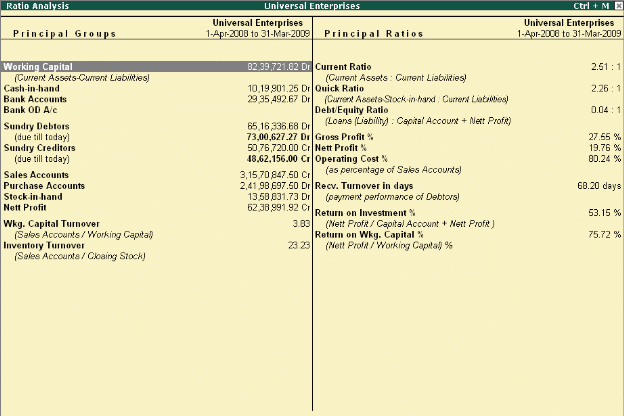</P>
<P STYLE="margin-left: 1.61in; margin-bottom: 2.31in; line-height: 100%">
<BR><BR>
</P>
<P STYLE="margin-top: 0.11in; margin-bottom: 0.07in; line-height: 100%">
<FONT FACE="Arial, serif"><FONT SIZE=3><FONT COLOR="#000000"><FONT SIZE=4><B>2.8
Scenario Management </B></FONT></FONT></FONT></FONT>
</P>
<P ALIGN=JUSTIFY STYLE="margin-top: 0.03in; margin-bottom: 0.07in; line-height: 100%">
<FONT FACE="Arial, serif"><FONT SIZE=3><FONT COLOR="#000000"><FONT SIZE=2 STYLE="font-size: 11pt">To
configure for </FONT></FONT><FONT COLOR="#000000"><FONT SIZE=2 STYLE="font-size: 11pt"><B>Scenarios</B></FONT></FONT><FONT COLOR="#000000"><FONT SIZE=2 STYLE="font-size: 11pt">,
</FONT></FONT><FONT COLOR="#000000"><FONT SIZE=2 STYLE="font-size: 11pt">Scenario
Management is the management tool provided in Tally.ERP 9 with the
help of which you can create multiple scenarios for the purpose of
forecasting or to view provisional reports. This can be done by
selectively including certain types of vouchers, which will in no way
affect the regular books. The vouchers that are used in scenario
management are</FONT></FONT></FONT></FONT></P>
<P ALIGN=JUSTIFY STYLE="margin-top: 0.03in; margin-bottom: 0.07in; line-height: 100%">
                            <FONT FACE="Arial, serif"><FONT SIZE=3><FONT COLOR="#000000"><FONT SIZE=2 STYLE="font-size: 11pt">1.Optional
Vouchers</FONT></FONT></FONT></FONT></P>
<P ALIGN=JUSTIFY STYLE="margin-left: 0.78in; text-indent: 0.53in; margin-top: 0.03in; margin-bottom: 0.07in; line-height: 100%">
<FONT FACE="Arial, serif"><FONT SIZE=3><FONT COLOR="#000000"><FONT SIZE=2 STYLE="font-size: 11pt">2.Memorandum
Vouchers </FONT></FONT></FONT></FONT>
</P>
<P ALIGN=JUSTIFY STYLE="margin-left: 0.78in; text-indent: 0.53in; margin-top: 0.03in; margin-bottom: 0.07in; line-height: 100%">
<FONT FACE="Arial, serif"><FONT SIZE=3><FONT COLOR="#000000"><FONT SIZE=2 STYLE="font-size: 11pt">3.Reversing
Journals</FONT></FONT></FONT></FONT></P>
<P STYLE="margin-bottom: 0.14in"><BR><BR>
</P>
<P STYLE="margin-bottom: 0.14in"><I>Go to </I><I><B>Gateway of Tally
&gt; F11: Features &gt; F1: Accounting Features</B></I></P>
<P STYLE="margin-bottom: 0.14in"> Set <B>Use Reversing Journals
</B>and <B>Optional Vouchers </B>to <B>Yes</B></P>
<P STYLE="margin-bottom: 0.14in"><FONT COLOR="#000000"><FONT SIZE=2 STYLE="font-size: 11pt">To
create a </FONT></FONT><FONT COLOR="#000000"><FONT SIZE=2 STYLE="font-size: 11pt"><B>Scenario:
</B></FONT></FONT>
</P>
<P ALIGN=JUSTIFY STYLE="margin-top: 0.03in; margin-bottom: 0.07in; line-height: 100%">
<FONT FACE="Arial, serif"><FONT SIZE=3><FONT COLOR="#000000"><FONT SIZE=2 STYLE="font-size: 11pt">To
view </FONT></FONT><FONT COLOR="#000000"><FONT SIZE=2 STYLE="font-size: 11pt"><B>Scenarios</B></FONT></FONT><FONT COLOR="#000000"><FONT SIZE=2 STYLE="font-size: 11pt">,
</FONT></FONT><FONT COLOR="#000000"><FONT SIZE=2 STYLE="font-size: 11pt"><I>Go
to </I></FONT></FONT><FONT COLOR="#000000"><FONT SIZE=2 STYLE="font-size: 11pt"><I><B>Gateway
of Tally &gt; Accounts Info. &gt; Scenarios &gt; Create </B></I></FONT></FONT></FONT></FONT>
</P>
<P ALIGN=JUSTIFY STYLE="margin-top: 0.03in; margin-bottom: 0.07in; line-height: 100%">
<FONT COLOR="#000000"></FONT><FONT FACE="Arial, serif"><FONT SIZE=3><FONT COLOR="#000000"><FONT SIZE=2 STYLE="font-size: 11pt">Specify
the </FONT></FONT><FONT COLOR="#000000"><FONT SIZE=2 STYLE="font-size: 11pt"><B>name
</B></FONT></FONT><FONT COLOR="#000000"><FONT SIZE=2 STYLE="font-size: 11pt">of
the scenario</FONT></FONT></FONT></FONT></P>
<P ALIGN=JUSTIFY STYLE="margin-top: 0.03in; margin-bottom: 0.07in; line-height: 100%">
<FONT COLOR="#000000"></FONT><FONT FACE="Arial, serif"><FONT SIZE=3><FONT COLOR="#000000"><FONT SIZE=2 STYLE="font-size: 11pt">Set
parameter </FONT></FONT><FONT COLOR="#000000"><FONT SIZE=2 STYLE="font-size: 11pt"><B>Include
Actuals </B></FONT></FONT><FONT COLOR="#000000"><FONT SIZE=2 STYLE="font-size: 11pt">to
</FONT></FONT><FONT COLOR="#000000"><FONT SIZE=2 STYLE="font-size: 11pt"><B>Yes/No
</B></FONT></FONT><FONT COLOR="#000000"><FONT SIZE=2 STYLE="font-size: 11pt">(as
required)</FONT></FONT></FONT></FONT></P>
<P ALIGN=JUSTIFY STYLE="margin-top: 0.03in; margin-bottom: 0.07in; line-height: 100%">
<FONT COLOR="#000000"></FONT><FONT FACE="Arial, serif"><FONT SIZE=3><FONT COLOR="#000000"><FONT SIZE=2 STYLE="font-size: 11pt">Set
parameters relating to </FONT></FONT><FONT COLOR="#000000"><FONT SIZE=2 STYLE="font-size: 11pt"><B>Exclude
forex gains/loss </B></FONT></FONT><FONT COLOR="#000000"><FONT SIZE=2 STYLE="font-size: 11pt">and
</FONT></FONT><FONT COLOR="#000000"><FONT SIZE=2 STYLE="font-size: 11pt"><B>Exclude
inventory tracking </B></FONT></FONT><FONT COLOR="#000000"><FONT SIZE=2 STYLE="font-size: 11pt">to
</FONT></FONT><FONT COLOR="#000000"><FONT SIZE=2 STYLE="font-size: 11pt"><B>Yes/No
</B></FONT></FONT><FONT COLOR="#000000"><FONT SIZE=2 STYLE="font-size: 11pt">(as
required)</FONT></FONT></FONT></FONT></P>
<P ALIGN=JUSTIFY STYLE="margin-top: 0.03in; margin-bottom: 0.07in; line-height: 100%">
<FONT COLOR="#000000"></FONT><FONT FACE="Arial, serif"><FONT SIZE=3><FONT COLOR="#000000"><FONT SIZE=2 STYLE="font-size: 11pt">Specify
the </FONT></FONT><FONT COLOR="#000000"><FONT SIZE=2 STYLE="font-size: 11pt"><B>voucher
types </B></FONT></FONT><FONT COLOR="#000000"><FONT SIZE=2 STYLE="font-size: 11pt">to
be </FONT></FONT><FONT COLOR="#000000"><FONT SIZE=2 STYLE="font-size: 11pt"><B>included/excluded
</B></FONT></FONT><FONT COLOR="#000000"><FONT SIZE=2 STYLE="font-size: 11pt">(Use
</FONT></FONT><FONT COLOR="#000000"><FONT SIZE=2 STYLE="font-size: 11pt"><B>Exclude
</B></FONT></FONT><FONT COLOR="#000000"><FONT SIZE=2 STYLE="font-size: 11pt">option
only for those Voucher Types that have been included previously). </FONT></FONT></FONT></FONT>
</P>
<P STYLE="margin-bottom: 0.14in">Select any report (Balance
Sheet, Profit and Loss A/c, Cost Centre and so on) <FONT FACE="Wingdings, serif"><FONT SIZE=1></FONT></FONT>Select
<B>Alt + C (New Column) </B><FONT FACE="Wingdings, serif"><FONT SIZE=1></FONT></FONT>Select
the <B>scenario </B><FONT FACE="Wingdings, serif"><FONT SIZE=1></FONT></FONT>Set
parameter <B>Show Variance </B>to <B>Yes/No</B></P>
<P STYLE="margin-bottom: 0.14in">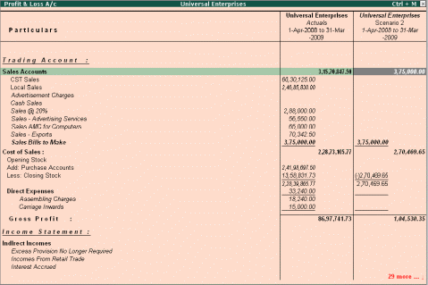</P>
<P STYLE="margin-bottom: 0.14in"><FONT COLOR="#000000"><FONT SIZE=5 STYLE="font-size: 20pt"><B>Lesson
3: the best for advanced Financial Management </B></FONT></FONT>
</P>
<P STYLE="margin-bottom: 0.14in">Tally.ERP 9 provides you the
capability to generate numerous advanced and critical Management
Information system reports and analytical tools, thereby facilitating
better management, effective control and well-informed decisions.</P>
<P STYLE="margin-top: 0.11in; margin-bottom: 0.07in; line-height: 100%">
<FONT FACE="Arial, serif"><FONT SIZE=3><FONT COLOR="#000000"><FONT SIZE=4><B>3.1
Multiple companies </B></FONT></FONT></FONT></FONT>
</P>
<P STYLE="margin-bottom: 0.14in">In Tally.ERP 9 you can create and
maintain multiple companies. Not only, can you maintain all the
companies / branch companies in Tally.ERP 9, but you can also
maintain your personal accounts as well. Tally.ERP 9 allows to handle
Companies concurrently i.e. You can load more than one company and
work on one or all of the companies loaded simultaneously, by
toggling between them, as and when required.</P>
<P ALIGN=JUSTIFY STYLE="margin-top: 0.03in; margin-bottom: 0.07in; line-height: 100%">
<FONT FACE="Arial, serif"><FONT SIZE=3><FONT COLOR="#000000"><FONT SIZE=2 STYLE="font-size: 11pt">To
create </FONT></FONT><FONT COLOR="#000000"><FONT SIZE=2 STYLE="font-size: 11pt"><B>Multiple
Companies</B></FONT></FONT><FONT COLOR="#000000"><FONT SIZE=2 STYLE="font-size: 11pt">,
</FONT></FONT></FONT></FONT>
</P>
<P STYLE="margin-bottom: 0.14in"><I>Go to </I><I><B>Gateway of Tally
&gt;Create Company</B></I><I>, </I>
</P>
<P STYLE="margin-bottom: 0.14in">Specify <B>Company Name </B>and
other related details 
</P>
<P STYLE="margin-bottom: 0.14in">Once you create a company,
create another new company (from <B>Gateway of Tally &gt; Alt + F3
(Company Info.) </B>and specify the details as explained</P>
<P ALIGN=JUSTIFY STYLE="margin-top: 0.03in; margin-bottom: 0.07in; line-height: 100%">
<FONT FACE="Arial, serif"><FONT SIZE=3><FONT COLOR="#000000"><FONT SIZE=2 STYLE="font-size: 11pt">To
create </FONT></FONT><FONT COLOR="#000000"><FONT SIZE=2 STYLE="font-size: 11pt"><B>Group
Company</B></FONT></FONT><FONT COLOR="#000000"><FONT SIZE=2 STYLE="font-size: 11pt">,
</FONT></FONT></FONT></FONT>
</P>
<P STYLE="margin-bottom: 0.14in"><I>Go to </I><I><B>Gateway of Tally
&gt;Company Info. (Alt+ F3) &gt;Create Group Company </B></I>
</P>
<P STYLE="margin-bottom: 0.14in">Specify name of the <B>Group
Company </B>and other information.</P>
<P STYLE="margin-bottom: 0.14in"> Select companies (already
created) to be grouped together</P>
<P STYLE="margin-bottom: 0.14in"> A group company is automatically
created, once you have created more than one company. Now, you can
load and work on any one of the companies.</P>
<P STYLE="margin-left: 1.61in; margin-bottom: 2.31in; line-height: 100%">
<BR><BR>
</P>
<P STYLE="margin-top: 0.11in; margin-bottom: 0.07in; line-height: 100%">
<BR><BR>
</P>
<P STYLE="margin-top: 0.11in; margin-bottom: 0.07in; line-height: 100%">
<FONT FACE="Arial, serif"><FONT SIZE=3><FONT COLOR="#000000"><FONT SIZE=4><B>3.2
Multi-Currency </B></FONT></FONT></FONT></FONT>
</P>
<P STYLE="margin-bottom: 0.14in">Many Organizations have transactions
in more than one currency. Such transactions have to be recorded
either in the base (home) currency or in the foreign currency. If the
transactions are recorded in home currency, the rate at which the
foreign currency is exchanged should be recorded as well. 
</P>
<P STYLE="margin-bottom: 0.14in">Tally.ERP 9 allows you create and
transact in multiple currencies. Tally.ERP 9 uses the term base
currency for the currency in which your account books are kept.
Foreign Exchange is used interchangeably with foreign currency. The
base currency is specified while creating the company.</P>
<P STYLE="margin-bottom: 0.14in">To use <B>Multi-currency </B>feature,
</P>
<P STYLE="margin-bottom: 0.14in"><B>Step 1 : Enable Multi-Currency
Feature </B><I>Go to </I><I><B>Gateway of Tally &gt; F11: Features &gt;
F1: Accounting Features</B></I></P>
<P STYLE="margin-bottom: 0.14in"> Set <B>Allow Multi Currency </B>to
<B>Yes</B></P>
<P STYLE="margin-bottom: 0.14in"> <B>Step 2 : Create Multi-Currency
</B><I>Go to </I><I><B>Gateway of Tally &gt; Accounts Info. &gt;
Currencies &gt; Create</B></I></P>
<P STYLE="margin-bottom: 0.14in"> <FONT FACE="Arial, serif">Enter
the </FONT><FONT FACE="Arial, serif"><B>Currency Symbol </B></FONT><FONT FACE="Arial, serif">and
other details</FONT></P>
<P STYLE="margin-bottom: 0.14in"><B>Step 3 : Define Rate of Exchange
</B><I>Go to </I><I><B>Gateway of Tally &gt; Accounts Info &gt;
Currencies &gt; Rate of Exchange.</B></I></P>
<P STYLE="margin-bottom: 0.14in">Specify the <B>Date </B>for Rate
of Exchange and other details (Standard, Selling and Buying). You can
now enter transactions in the currency of your choice. To view report
in <B>Multi-Currencies</B>, 
</P>
<P STYLE="margin-bottom: 0.14in">Select any report (i.e., Balance
Sheet, Profit and Loss A/c, Trial Balance or any other report) 
</P>
<P STYLE="margin-bottom: 0.14in">Select <B>Alt + C (New Column) </B>
</P>
<P STYLE="margin-bottom: 0.14in">Select the required <B>currency
</B>(in which you want to view the report) 
</P>
<P STYLE="margin-bottom: 0.14in">Specify the <B>Rate of Exchange
</B>for the selected currency and press <B>Enter</B></P>
<P STYLE="margin-bottom: 0.14in">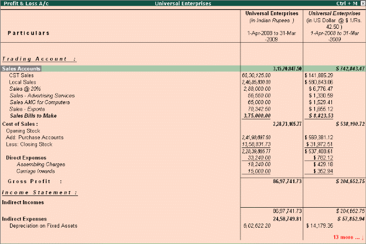</P>
<P STYLE="margin-top: 0.11in; margin-bottom: 0.07in; line-height: 100%">
<FONT FACE="Arial, serif"><FONT SIZE=3><FONT COLOR="#000000"><FONT SIZE=4><B>3.3
Multiple financial year </B></FONT></FONT></FONT></FONT>
</P>
<P STYLE="margin-bottom: 0.14in">In Tally.ERP 9 , you can have any
number of financial years for one company. At the time of creating
the company, it is necessary for you to mention the beginning of the
financial year. There-after, you can maintain accounts for any number
of periods. For example, assume you have created a Company starting
from 1st of April 2008. Now, if you wish to change to the next
financial year, you have to select <B>F2: Period(Alt+F2)</B>, from
<B>Gateway of Tally </B>and specify the date range as 1-4-2009 to
31-3-2010 and continue with the transactions for the next financial
year. 
</P>
<P STYLE="margin-bottom: 0.14in">Once you have information for
multiple years in a single company you can easily toggle between
different financial periods, by selecting <B>F2: Period(Alt+F2)
</B>option or can view reports for a period which could span across
multiple financial years, for e.g. you can view a report consisting
of transactions for the second half of the previous financial year
and first half the current financial</P>
<P STYLE="margin-bottom: 0.14in"><FONT COLOR="#000000"><FONT SIZE=4><B>3.4
Multi-columnar reporting </B></FONT></FONT>
</P>
<P STYLE="margin-bottom: 0.14in">In Tally.ERP 9, you can compare
information using multi-columnar reports. You can view / compare
information for multiple periods (year, month, quarter or any
specified period), multiple currencies and so on for the same company
or compare information for two or more companies in the same screen
without toggling between different periods / companies. This
flexibility and ease in comparison of information will help you to do
meaningful analysis and bring out any exceptions immediately.</P>
<P STYLE="margin-bottom: 0.14in"> To view a <B>Multi-Columnar Report</B></P>
<P STYLE="margin-bottom: 0.14in"> Select any report (<B>e.g.
Balance Sheet</B>)</P>
<P STYLE="margin-bottom: 0.14in"> Select <B>(Alt + N) Auto Column
</B>
</P>
<P STYLE="margin-bottom: 0.14in">Select any option (company,
year, month, quarter etc) and press <B>Enter </B>Tally.ERP 9 now
displays comparisons based on the option selected.</P>
<P STYLE="margin-bottom: 0.14in">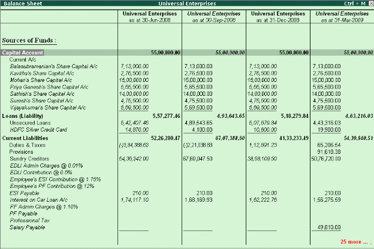</P>
<P STYLE="margin-top: 0.11in; margin-bottom: 0.07in; line-height: 100%">
<FONT FACE="Arial, serif"><FONT SIZE=3><FONT COLOR="#000000"><FONT SIZE=4><B>3.6
Post dated Vouchers </B></FONT></FONT></FONT></FONT>
</P>
<P ALIGN=JUSTIFY STYLE="margin-top: 0.03in; margin-bottom: 0.07in; line-height: 100%">
<FONT FACE="Arial, serif"><FONT SIZE=3><FONT COLOR="#000000"><FONT SIZE=2 STYLE="font-size: 11pt">To
enter a </FONT></FONT><FONT COLOR="#000000"><FONT SIZE=2 STYLE="font-size: 11pt"><B>Post
dated Voucher</B></FONT></FONT><FONT COLOR="#000000"><FONT SIZE=2 STYLE="font-size: 11pt">,
</FONT></FONT></FONT></FONT>
</P>
<P ALIGN=JUSTIFY STYLE="margin-top: 0.03in; margin-bottom: 0.07in; line-height: 100%">
<FONT FACE="Arial, serif"><FONT SIZE=3><FONT COLOR="#000000"><FONT SIZE=2 STYLE="font-size: 11pt">To
view </FONT></FONT><FONT COLOR="#000000"><FONT SIZE=2 STYLE="font-size: 11pt"><B>Post
dated vouchers</B></FONT></FONT><FONT COLOR="#000000"><FONT SIZE=2 STYLE="font-size: 11pt">,
</FONT></FONT><FONT COLOR="#000000"><FONT SIZE=2 STYLE="font-size: 11pt">Tally.ERP
9 provides the capability to enter vouchers in advance for future
transactions, that are definite in nature. The vouchers marked as
</FONT></FONT><FONT COLOR="#000000"><FONT SIZE=2 STYLE="font-size: 11pt"><B>Post
dated </B></FONT></FONT><FONT COLOR="#000000"><FONT SIZE=2 STYLE="font-size: 11pt">does
not affect the books of accounts till the date specified in the
voucher. This facility is extremely useful when the user has issued
or received post-dated cheques and does not need to modify the
voucher to reflect the transaction on a particular date. </FONT></FONT></FONT></FONT>
</P>
<P ALIGN=JUSTIFY STYLE="margin-top: 0.03in; margin-bottom: 0.07in; line-height: 100%">
<FONT FACE="Arial, serif"><FONT SIZE=3><FONT COLOR="#000000"><FONT SIZE=2 STYLE="font-size: 11pt"><I>Go
to </I></FONT></FONT><FONT COLOR="#000000"><FONT SIZE=2 STYLE="font-size: 11pt"><I><B>Gateway
of Tally &gt;Accounting Vouchers </B></I></FONT></FONT><FONT COLOR="#000000"><FONT SIZE=2 STYLE="font-size: 11pt"><I>&gt;
select </I></FONT></FONT><FONT COLOR="#000000"><FONT SIZE=2 STYLE="font-size: 11pt"><I><B>F5:
Payment </B></I></FONT></FONT></FONT></FONT>
</P>
<P ALIGN=JUSTIFY STYLE="margin-top: 0.03in; margin-bottom: 0.07in; line-height: 100%">
<FONT COLOR="#000000"></FONT><FONT FACE="Arial, serif"><FONT SIZE=3><FONT COLOR="#000000"><FONT SIZE=2 STYLE="font-size: 11pt">Click
</FONT></FONT><FONT COLOR="#000000"><FONT SIZE=2 STYLE="font-size: 11pt"><B>Ctrl
+ T (Post Dated)</B></FONT></FONT></FONT></FONT></P>
<P ALIGN=JUSTIFY STYLE="margin-top: 0.03in; margin-bottom: 0.07in; line-height: 100%">
<FONT COLOR="#000000"></FONT><FONT FACE="Arial, serif"><FONT SIZE=3><FONT COLOR="#000000"><FONT SIZE=2 STYLE="font-size: 11pt">Complete
the transaction and save </FONT></FONT></FONT></FONT>
</P>
<P STYLE="margin-bottom: 0.14in"><I>Go to </I><I><B>Gateway of Tally
&gt;Display &gt; Exception Reports &gt; Post-Dated Vouchers </B></I>
</P>
<P STYLE="margin-bottom: 0.14in">Select a <B>month </B>or Click
<B>F2: Period </B>to specify a date range for viewing the report for
different periods.</P>
<P STYLE="margin-bottom: 0.14in">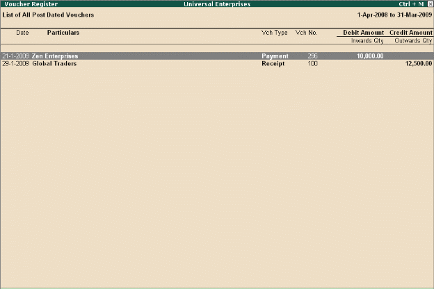</P>
<P STYLE="margin-top: 0.11in; margin-bottom: 0.07in; line-height: 100%">
<FONT FACE="Arial, serif"><FONT SIZE=3><FONT COLOR="#000000"><FONT SIZE=4><B>3.7
User defined Vouchers </B></FONT></FONT></FONT></FONT>
</P>
<P STYLE="margin-bottom: 0.14in">Tally.ERP 9 provides 18 predefined
vouchers and also allows you to create new Accounting as well as
Inventory vouchers types, as per your requirements. For example, you
can further classify payment vouchers by creating vouchers by the
name <B>Bank Payment </B>and <B>Cash Payment </B>Vouchers. You can
also set the voucher numbering as per your needs, which can be either
automatic numbering or manual numbering or have no numbering at all.</P>
<P ALIGN=JUSTIFY STYLE="margin-top: 0.03in; margin-bottom: 0.07in; line-height: 100%">
<FONT FACE="Arial, serif"><FONT SIZE=3><FONT COLOR="#000000"><FONT SIZE=2 STYLE="font-size: 11pt">To
create a new </FONT></FONT><FONT COLOR="#000000"><FONT SIZE=2 STYLE="font-size: 11pt"><B>Voucher
Type</B></FONT></FONT><FONT COLOR="#000000"><FONT SIZE=2 STYLE="font-size: 11pt">,
</FONT></FONT></FONT></FONT>
</P>
<P STYLE="margin-bottom: 0.14in"><I>Go to </I><I><B>Gateway of Tally
&gt; Accounts Info. &gt; Voucher Types &gt; Create </B></I><FONT FACE="Wingdings, serif"><FONT SIZE=1></FONT></FONT>Enter
the voucher name, type, specify the method of numbering, activate or
deactivate the other functions as per needs.</P>
<P STYLE="margin-bottom: 0.14in"><FONT COLOR="#000000"><FONT SIZE=4><B>3.8
Sales and Purchase extracts </B></FONT></FONT>
</P>
<P ALIGN=JUSTIFY STYLE="margin-top: 0.03in; margin-bottom: 0.07in; line-height: 100%">
<FONT FACE="Arial, serif"><FONT SIZE=3><FONT COLOR="#000000"><FONT SIZE=2 STYLE="font-size: 11pt">To
generate </FONT></FONT><FONT COLOR="#000000"><FONT SIZE=2 STYLE="font-size: 11pt"><B>Extract
of Purchase Register</B></FONT></FONT><FONT COLOR="#000000"><FONT SIZE=2 STYLE="font-size: 11pt">,
</FONT></FONT><FONT COLOR="#000000"><FONT SIZE=2 STYLE="font-size: 11pt">In
Tally.ERP 9, you can generate extract of the report on Sales and
Purchase Registers. The extract report provides you consolidated
figures for both debit and credit balances for all groups and
ledgers. With this report you get the complete Sales / Purchase
Turnover figures for any period. </FONT></FONT></FONT></FONT>
</P>
<P STYLE="margin-bottom: 0.14in"><I>Go to </I><I><B>Gateway of Tally
&gt; Display &gt; Accounts Books &gt; Purchase Register</B></I></P>
<P STYLE="margin-bottom: 0.14in"> Select any <B>month</B></P>
<P STYLE="margin-bottom: 0.14in"> Click <B>F6: Extract</B></P>
<P STYLE="margin-bottom: 0.14in">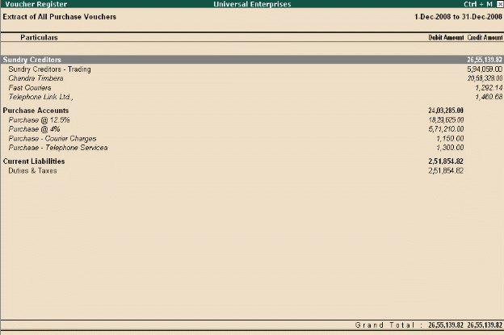</P>
<P STYLE="margin-top: 0.11in; margin-bottom: 0.07in; line-height: 100%">
<FONT FACE="Arial, serif"><FONT SIZE=3><FONT COLOR="#000000"><FONT SIZE=4><B>3.9
Cash Flows </B></FONT></FONT></FONT></FONT>
</P>
<P ALIGN=JUSTIFY STYLE="margin-top: 0.03in; margin-bottom: 0.07in; line-height: 100%">
<FONT FACE="Arial, serif"><FONT SIZE=3><FONT COLOR="#000000"><FONT SIZE=2 STYLE="font-size: 11pt">To
View </FONT></FONT><FONT COLOR="#000000"><FONT SIZE=2 STYLE="font-size: 11pt"><B>Cash
Flow Summary</B></FONT></FONT><FONT COLOR="#000000"><FONT SIZE=2 STYLE="font-size: 11pt">,
</FONT></FONT><FONT COLOR="#000000"><FONT SIZE=2 STYLE="font-size: 11pt">Tally.ERP
9 provides you with a cash flow statement to track the movement of
cash flow i.e. cash inflows as well as cash outflows (both cash &amp;
bank included) of your business. The report also displays a net flow
for any period. </FONT></FONT></FONT></FONT>
</P>
<P STYLE="margin-bottom: 0.14in"><I>Go to </I><I><B>Gateway of Tally
&gt; Display &gt; Cash/Funds Flow &gt; Cash Flow</B></I></P>
<P STYLE="margin-bottom: 0.14in"> <FONT FACE="Arial, serif">Select a
</FONT><FONT FACE="Arial, serif"><B>month</B></FONT></P>
<P STYLE="margin-bottom: 0.14in">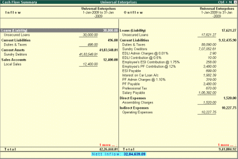</P>
<P STYLE="margin-bottom: 0.14in"><FONT COLOR="#000000"><FONT SIZE=4><B>3.10
Daily Balance &amp; Transaction Values </B></FONT></FONT>
</P>
<P STYLE="margin-bottom: 0.14in">You can view cash/ bank books and
ledgers on a day-wise basis to get information on the total
transaction value and closing balances. You can also view daily
average details as well as high and low details for the month in the
same report.</P>
<P ALIGN=JUSTIFY STYLE="margin-top: 0.03in; margin-bottom: 0.07in; line-height: 100%">
<FONT FACE="Arial, serif"><FONT SIZE=3><FONT COLOR="#000000"><FONT SIZE=2 STYLE="font-size: 11pt">To
View </FONT></FONT><FONT COLOR="#000000"><FONT SIZE=2 STYLE="font-size: 11pt"><B>Daily
Break Up of Cash/Bank Books </B></FONT></FONT><FONT COLOR="#000000"><FONT SIZE=2 STYLE="font-size: 11pt">or
</FONT></FONT><FONT COLOR="#000000"><FONT SIZE=2 STYLE="font-size: 11pt"><B>Ledger</B></FONT></FONT><FONT COLOR="#000000"><FONT SIZE=2 STYLE="font-size: 11pt">,
</FONT></FONT></FONT></FONT>
</P>
<P ALIGN=JUSTIFY STYLE="margin-top: 0.03in; margin-bottom: 0.07in; line-height: 100%">
<FONT FACE="Arial, serif"><FONT SIZE=3><FONT SIZE=2 STYLE="font-size: 11pt"><I>Go
to </I></FONT><FONT SIZE=2 STYLE="font-size: 11pt"><I><B>Gateway of
Tally &gt; Display &gt; Accounts Books &gt; Cash/Bank Books or Ledger
</B></I></FONT></FONT></FONT>
</P>
<P ALIGN=JUSTIFY STYLE="margin-top: 0.03in; margin-bottom: 0.07in; line-height: 100%">
<FONT FACE="Arial, serif"><FONT SIZE=3><FONT SIZE=2 STYLE="font-size: 11pt">Select
the ledger account (Bank/Cash or any other ledger) </FONT></FONT></FONT>
</P>
<P ALIGN=JUSTIFY STYLE="margin-top: 0.03in; margin-bottom: 0.07in; line-height: 100%">
<FONT FACE="Arial, serif"><FONT SIZE=3><FONT SIZE=2 STYLE="font-size: 11pt">From
the </FONT><FONT SIZE=2 STYLE="font-size: 11pt"><B>Ledger Monthly
Summary </B></FONT><FONT SIZE=2 STYLE="font-size: 11pt">report,
select a particular </FONT><FONT SIZE=2 STYLE="font-size: 11pt"><B>month
</B></FONT><FONT SIZE=2 STYLE="font-size: 11pt">and press </FONT><FONT SIZE=2 STYLE="font-size: 11pt"><B>Enter
</B></FONT></FONT></FONT>
</P>
<P ALIGN=JUSTIFY STYLE="margin-top: 0.03in; margin-bottom: 0.07in; line-height: 100%">
<FONT FACE="Arial, serif"><FONT SIZE=3><FONT SIZE=2 STYLE="font-size: 11pt">In
the </FONT><FONT SIZE=2 STYLE="font-size: 11pt"><B>Ledger Vouchers
</B></FONT><FONT SIZE=2 STYLE="font-size: 11pt">screen </FONT></FONT></FONT>
</P>
<P STYLE="margin-top: 0.01in; margin-bottom: 0.07in; line-height: 100%">
<FONT COLOR="#000000"></FONT><FONT FACE="Arial, serif"><FONT SIZE=3><FONT COLOR="#000000"><FONT SIZE=2 STYLE="font-size: 11pt">Click
</FONT></FONT><FONT COLOR="#000000"><FONT SIZE=2 STYLE="font-size: 11pt"><B>F6:
Dly Brk-up</B></FONT></FONT></FONT></FONT></P>
<P STYLE="margin-bottom: 0.14in"><FONT COLOR="#000000"></FONT><FONT COLOR="#000000"><FONT SIZE=2 STYLE="font-size: 11pt">Click
</FONT></FONT><FONT COLOR="#000000"><FONT SIZE=2 STYLE="font-size: 11pt"><B>F12:
Configure</B></FONT></FONT><FONT COLOR="#000000"><FONT SIZE=2 STYLE="font-size: 11pt">,
set </FONT></FONT><FONT COLOR="#000000"><FONT SIZE=2 STYLE="font-size: 11pt"><B>Show
Average Details </B></FONT></FONT><FONT COLOR="#000000"><FONT SIZE=2 STYLE="font-size: 11pt">and
</FONT></FONT><FONT COLOR="#000000"><FONT SIZE=2 STYLE="font-size: 11pt"><B>Show
High/Low Details </B></FONT></FONT><FONT COLOR="#000000"><FONT SIZE=2 STYLE="font-size: 11pt">to
</FONT></FONT><FONT COLOR="#000000"><FONT SIZE=2 STYLE="font-size: 11pt"><B>Yes</B></FONT></FONT></P>
<P STYLE="margin-bottom: 0.14in">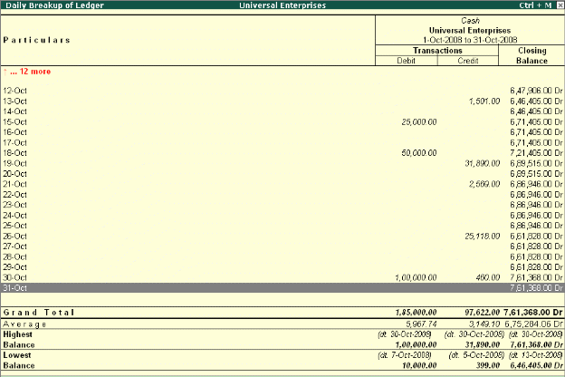</P>
<P STYLE="margin-bottom: 0.14in"><BR><BR>
</P>
<P STYLE="margin-bottom: 0.14in"><BR><BR>
</P>
<P STYLE="margin-bottom: 0.14in"><BR><BR>
</P>
<P STYLE="margin-top: 0.11in; margin-bottom: 0.07in; line-height: 100%">
<BR><BR>
</P>
<P STYLE="margin-top: 0.11in; margin-bottom: 0.07in; line-height: 100%">
<FONT FACE="Arial, serif"><FONT SIZE=3><FONT COLOR="#000000"><FONT SIZE=4><B>3.11
Interest Calculations </B></FONT></FONT></FONT></FONT>
</P>
<P STYLE="margin-bottom: 0.14in">Tally.ERP 9 provides a powerful
capability to calculate interest on outstanding balance amounts and
oustanding bills/invoices/ transactions (Receivables and payables) or
on any delayed payments so on.</P>
<P STYLE="margin-bottom: 0.14in">The <B>Activate Interest Calculation
</B>field is displayed in the <B>Ledger Creation </B>screen only, if
<B>Activate Interest Calculations </B>is set to <B>Yes </B>in <B>F11:
Accounting Features</B>. Set this field to <B>Yes </B>for each
specific ledger account for which interest is to be calculated. 
</P>
<P STYLE="margin-bottom: 0.14in"><B>Step 1: Enable Interest
Calculation </B>
</P>
<P STYLE="margin-bottom: 0.14in">In <B>F11: Accounting Features</B>,
set parameter <B>Activate Interest Calculation </B>(use advanced
parameters) to <B>Yes </B>
</P>
<P STYLE="margin-bottom: 0.14in"><B>Step 2: Enable Ledger for
Interest Calculation </B><I>Go to </I><I><B>Gateway of Tally &gt;
Accounts Info-&gt;Ledger-&gt; Alter.</B></I></P>
<P STYLE="margin-bottom: 0.14in"> Select a ledger for which
interest calculation has to be activated.</P>
<P STYLE="margin-bottom: 0.14in"> Set <B>Activate Interest
Calculation </B>to <B>Yes </B>(Set this field to <B>Yes </B>for each
specific ledger account for which interest is to be calculated.</P>
<P STYLE="margin-bottom: 0.14in"> Specify information regarding
<B>Rate of interest (%) </B>and <B>Style </B>as per requirements</P>
<P STYLE="margin-bottom: 0.14in">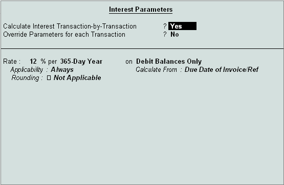</P>
<P STYLE="margin-bottom: 0.14in">To view <B>Interest Calculation
Report</B>, <I>Go to </I><I><B>Gateway of Tally &gt; Display &gt;
Statements of Accounts &gt; Interest Calculations &gt; Receivables /
Payables/Ledger</B></I></P>
<P STYLE="margin-bottom: 0.14in"><BR><BR>
</P>
<P STYLE="margin-bottom: 0.14in"><FONT COLOR="#000000"><FONT SIZE=5 STYLE="font-size: 20pt"><B>Lesson
4: basic Inventory Management</B></FONT></FONT></P>
<P STYLE="margin-bottom: 0.14in">Tally.ERP 9 provides you the
capability to record inventory transactions without changing the way
you do your business. It provides numerous predefined Inventory
vouchers to suit your business requirements and flexibility to create
unlimited stock items, use simple to complex conversion units and
generate invoices with the required information and dimensions.</P>
<P STYLE="margin-top: 0.11in; margin-bottom: 0.07in; line-height: 100%">
<FONT FACE="Arial, serif"><FONT SIZE=3><FONT COLOR="#000000"><FONT SIZE=4><B>4.1
Flexible units of Measure </B></FONT></FONT></FONT></FONT>
</P>
<P STYLE="margin-bottom: 0.14in">The instances of stock items being
measured in different Units of Measure are common. In Tally.ERP 9 you
can define multiple units as per your requirements. It is also
possible that an item could be transacted in one or more units of
measure, for e.g. Sugar is purchased in tons and sold in either kgs
or packets.</P>
<P STYLE="margin-bottom: 0.14in">Tally.ERP 9 allows creation of
<B>compound </B>as well as <B>alternate </B>units for a stock item.
You can define a Compound unit as a relation between of two simple
Units, for e.g. create a compound unit namely, <B>Ton of 100 kgs</B>.</P>
<P ALIGN=JUSTIFY STYLE="margin-top: 0.03in; margin-bottom: 0.07in; line-height: 100%">
<FONT FACE="Arial, serif"><FONT SIZE=3><FONT COLOR="#000000"><FONT SIZE=2 STYLE="font-size: 11pt">To
create </FONT></FONT><FONT COLOR="#000000"><FONT SIZE=2 STYLE="font-size: 11pt"><B>Units
of Measure</B></FONT></FONT><FONT COLOR="#000000"><FONT SIZE=2 STYLE="font-size: 11pt">,
</FONT></FONT></FONT></FONT>
</P>
<P STYLE="margin-bottom: 0.14in"><I>Go to </I><I><B>Gateway of Tally
&gt; Inventory Info. &gt; Units of Measure &gt; Create</B></I></P>
<P STYLE="margin-bottom: 0.14in"> Select <B>Unit Type </B>
</P>
<P STYLE="margin-bottom: 0.14in">Specify <B>Unit name</B></P>
<P ALIGN=JUSTIFY STYLE="margin-top: 0.03in; margin-bottom: 0.07in; line-height: 100%">
<FONT FACE="Arial, serif"><FONT SIZE=3><FONT COLOR="#000000"><FONT SIZE=2 STYLE="font-size: 11pt">To
activate and create </FONT></FONT><FONT COLOR="#000000"><FONT SIZE=2 STYLE="font-size: 11pt"><B>Alternate
Units</B></FONT></FONT><FONT COLOR="#000000"><FONT SIZE=2 STYLE="font-size: 11pt">,
</FONT></FONT></FONT></FONT>
</P>
<P STYLE="margin-bottom: 0.14in"><I>Go to </I><I><B>Gateway of Tally
&gt; Inventory Info. &gt; Inventory Info &gt; Stock Item &gt; Create </B></I>
</P>
<P STYLE="margin-bottom: 0.14in">Press <B>F12: Configure
(Inventory Info.) </B>and activate <B>Use ALTERNATE UNITS </B>for
Stock Items <FONT FACE="Wingdings, serif"><FONT SIZE=1></FONT></FONT>Enter
<B>Alternate Units</B></P>
<P ALIGN=JUSTIFY STYLE="margin-top: 0.03in; margin-bottom: 0.07in; line-height: 100%">
<FONT FACE="Arial, serif"><FONT SIZE=3><FONT COLOR="#000000"><FONT SIZE=2 STYLE="font-size: 11pt">To
create </FONT></FONT><FONT COLOR="#000000"><FONT SIZE=2 STYLE="font-size: 11pt"><B>Compound
Units</B></FONT></FONT><FONT COLOR="#000000"><FONT SIZE=2 STYLE="font-size: 11pt">,
create two simple units of measure (as mentioned earlier) and then </FONT></FONT></FONT></FONT>
</P>
<P STYLE="margin-bottom: 0.14in"><I>Go to </I><I><B>Gateway of Tally
&gt; Inventory Info. &gt; Units of Measure-&gt;Create. </B></I>
</P>
<P STYLE="margin-bottom: 0.14in">Select <B>Unit Type </B>as
<B>Compound</B></P>
<P STYLE="margin-bottom: 0.14in">Select <B>First Unit </B>and
enter <B>Conversion </B>units 
</P>
<P STYLE="margin-bottom: 0.14in">Select the <B>Second Unit</B></P>
<P ALIGN=JUSTIFY STYLE="margin-top: 0.03in; margin-bottom: 0.07in; line-height: 100%">
<FONT FACE="Arial, serif"><FONT SIZE=3><FONT COLOR="#000000"><FONT SIZE=2 STYLE="font-size: 11pt">To
view Reports in </FONT></FONT><FONT COLOR="#000000"><FONT SIZE=2 STYLE="font-size: 11pt"><B>Alternative
Units</B></FONT></FONT><FONT COLOR="#000000"><FONT SIZE=2 STYLE="font-size: 11pt">,
</FONT></FONT></FONT></FONT>
</P>
<P STYLE="margin-bottom: 0.14in"><I>Go to </I><I><B>Gateway of Tally
&gt; Stock Summary</B></I></P>
<P STYLE="margin-bottom: 0.14in"> Press <B>F12: Configure</B>,
set <B>Show Opening balance, Goods Inwards, Goods Outwards and
Closing Balance </B>to <B>Yes </B><FONT FACE="Wingdings, serif"><FONT SIZE=1></FONT></FONT>Set
<B>Show using Alternate Units </B>to <B>Yes</B></P>
<P STYLE="margin-bottom: 0.14in">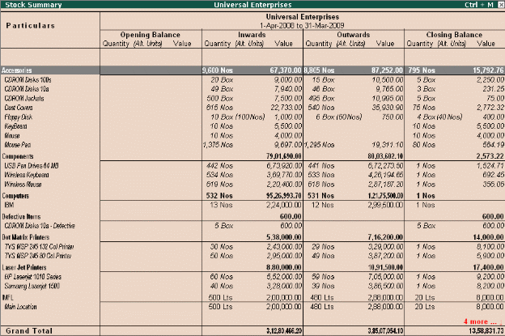</P>
<P STYLE="margin-top: 0.11in; margin-bottom: 0.07in; line-height: 100%">
<FONT FACE="Arial, serif"><FONT SIZE=3><FONT COLOR="#000000"><FONT SIZE=4><B>4.2
Flexible Invoicing </B></FONT></FONT></FONT></FONT>
</P>
<P STYLE="margin-bottom: 0.14in">In Tally.ERP 9, you have flexibility
to invoice items or ledger accounts directly to generate sales
invoices. The details that you can include or exclude in an invoice
is based on the business needs for instance, you may want to print
batch number, Manufacturing as well as expiry date, additional
description for items, show discounts on the invoice and so on.</P>
<P STYLE="margin-bottom: 0.14in"><FONT COLOR="#000000"><B><FONT SIZE=3 STYLE="font-size: 11pt">4.2.1
Sales Invoice</FONT></B></FONT></P>
<P ALIGN=JUSTIFY STYLE="margin-top: 0.03in; margin-bottom: 0.07in; line-height: 100%">
<FONT FACE="Arial, serif"><FONT SIZE=3><FONT COLOR="#000000"><FONT SIZE=2 STYLE="font-size: 11pt">To
enter an </FONT></FONT><FONT COLOR="#000000"><FONT SIZE=2 STYLE="font-size: 11pt"><B>Invoice</B></FONT></FONT><FONT COLOR="#000000"><FONT SIZE=2 STYLE="font-size: 11pt">,
</FONT></FONT></FONT></FONT>
</P>
<P STYLE="margin-bottom: 0.14in"><I>Go to </I><I><B>Gateway of Tally
&gt; Accounting Vouchers &gt; Select Sales (F8) </B></I><FONT FACE="Wingdings, serif"><FONT SIZE=1></FONT></FONT>Press
<B>F12: Configure</B>, to activate or deactivate the features as per
requirements <FONT FACE="Wingdings, serif"><FONT SIZE=1></FONT></FONT><B>Enter
</B>all relevant information and save the voucher. <FONT FACE="Wingdings, serif"><FONT SIZE=1></FONT></FONT>Press
<B>Alt + P (P: Print)</B></P>
<P STYLE="margin-bottom: 0.14in">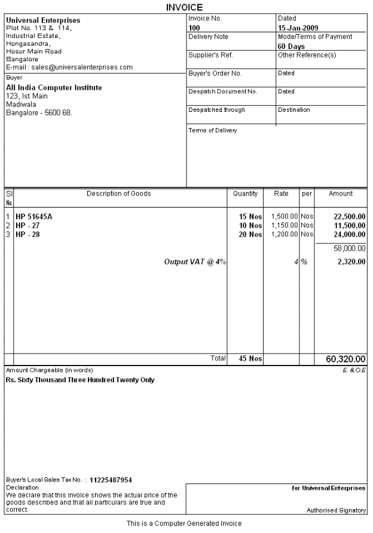</P>
<P STYLE="margin-bottom: 0.14in"><FONT COLOR="#000000"><B><FONT SIZE=3 STYLE="font-size: 11pt">4.2.2
Separate Discount Column on Invoices </FONT></B></FONT>
</P>
<P STYLE="margin-bottom: 0.14in">Tally.ERP 9 allows the user to enter
discount for each and every Stock Item and also automati-cally
calculates and displays the discounted value in the invoice. 
</P>
<P STYLE="margin-bottom: 0.14in">To activate discount column in
Invoicing</P>
<P STYLE="margin-bottom: 0.14in"> <FONT FACE="Arial, serif">Press
</FONT><FONT FACE="Arial, serif"><B>F11: Inventory Features &gt; </B></FONT><FONT FACE="Arial, serif">Set
</FONT><FONT FACE="Arial, serif"><B>Separate discount columns for
Invoices </B></FONT><FONT FACE="Arial, serif">to </FONT><FONT FACE="Arial, serif"><B>Yes</B></FONT></P>
<P STYLE="margin-right: 0.62in; margin-top: 0.08in; margin-bottom: 0.07in; line-height: 100%">
<FONT FACE="Arial, serif"><FONT SIZE=3><FONT COLOR="#000000"><B><FONT SIZE=3 STYLE="font-size: 11pt">4.2.3
Purchase Invoices </FONT></B></FONT></FONT></FONT>
</P>
<P STYLE="margin-bottom: 0.14in">Tally.ERP 9 provides the option to
enter purchase transactions in invoice format and hence entering
vendor invoices is made easy. When you enter purchase detailw in the
invoice format, the stock items selected are automatically updated in
the stock summary. You can apportion addi-tional expenses, like
taxes, freight etc., to stock items which affects their valuations. 
</P>
<P STYLE="margin-bottom: 0.14in">To enable <B>Purchase Invoices in
Invoice Format</B>, 
</P>
<P STYLE="margin-bottom: 0.14in">Press <B>F11: Inventory Features
&gt; </B>Enable <B>Allow Invoicing </B>and <B>Enter Purchases in
Invoice Format </B>to <B>Yes </B>To enter <B>Purchase Invoices in
Invoice Format, </B><I>Go to </I><I><B>Gateway of Tally &gt;
Accounting Vouchers &gt; Select Purchase (F9) </B></I>
</P>
<P STYLE="margin-bottom: 0.14in">Select <B>Party's A/c Name </B>
</P>
<P STYLE="margin-bottom: 0.14in">Select <B>Stock Items </B>
</P>
<P STYLE="margin-bottom: 0.14in">Specify <B>Qty </B>and <B>Rate,
</B>the value is automatically calculated <FONT FACE="Wingdings, serif"><FONT SIZE=1></FONT></FONT>Select
taxes, freight &amp; other expenses (if any).</P>
<P STYLE="margin-right: 0.62in; margin-top: 0.08in; margin-bottom: 0.07in; line-height: 100%">
<FONT FACE="Arial, serif"><FONT SIZE=3><FONT COLOR="#000000"><B><FONT SIZE=3 STYLE="font-size: 11pt">4.3.1
Stock Group </FONT></B></FONT></FONT></FONT>
</P>
<P STYLE="margin-bottom: 0.14in">In Tally.ERP 9, you can classify all
common stock items to a single group, for instance Raw materials,
Components Consumables, Desktop computers, Scanners etc. Grouping of
stock items facilitates effective and substantive reporting on stock
items. In Tally.ERP 9, you can create unlimited levels of groups for
in-depth analysis.</P>
<P ALIGN=JUSTIFY STYLE="margin-top: 0.03in; margin-bottom: 0.07in; line-height: 100%">
<FONT FACE="Arial, serif"><FONT SIZE=3><FONT COLOR="#000000"><FONT SIZE=2 STYLE="font-size: 11pt">To
create </FONT></FONT><FONT COLOR="#000000"><FONT SIZE=2 STYLE="font-size: 11pt"><B>Stock
Groups </B></FONT></FONT></FONT></FONT>
</P>
<P ALIGN=JUSTIFY STYLE="margin-top: 0.03in; margin-bottom: 0.07in; line-height: 100%">
<FONT FACE="Arial, serif"><FONT SIZE=3><FONT COLOR="#000000"><FONT SIZE=2 STYLE="font-size: 11pt">To
view </FONT></FONT><FONT COLOR="#000000"><FONT SIZE=2 STYLE="font-size: 11pt"><B>Stock
Group Summary Reports</B></FONT></FONT><FONT COLOR="#000000"><FONT SIZE=2 STYLE="font-size: 11pt">,
</FONT></FONT><FONT COLOR="#000000"><FONT SIZE=2 STYLE="font-size: 11pt"><I>Go
to </I></FONT></FONT><FONT COLOR="#000000"><FONT SIZE=2 STYLE="font-size: 11pt"><I><B>Gateway
of Tally &gt; Inventory Info. &gt; Stock Groups &gt; Create</B></I></FONT></FONT></FONT></FONT></P>
<P ALIGN=JUSTIFY STYLE="margin-top: 0.03in; margin-bottom: 0.07in; line-height: 100%">
<FONT COLOR="#000000"></FONT><FONT FACE="Arial, serif"><FONT SIZE=3><FONT COLOR="#000000"><FONT SIZE=2 STYLE="font-size: 11pt">Enter
</FONT></FONT><FONT COLOR="#000000"><FONT SIZE=2 STYLE="font-size: 11pt"><B>Name
</B></FONT></FONT><FONT COLOR="#000000"><FONT SIZE=2 STYLE="font-size: 11pt">for
the </FONT></FONT><FONT COLOR="#000000"><FONT SIZE=2 STYLE="font-size: 11pt"><B>Group
</B></FONT></FONT><FONT COLOR="#000000"><FONT SIZE=2 STYLE="font-size: 11pt">(Specify
the parent group of the current group). </FONT></FONT></FONT></FONT>
</P>
<P ALIGN=JUSTIFY STYLE="margin-top: 0.03in; margin-bottom: 0.07in; line-height: 100%">
<FONT COLOR="#000000"></FONT><FONT FACE="Arial, serif"><FONT SIZE=3><FONT COLOR="#000000"><FONT SIZE=2 STYLE="font-size: 11pt">Enter
other details and save screen</FONT></FONT></FONT></FONT></P>
<P ALIGN=JUSTIFY STYLE="margin-top: 0.03in; margin-bottom: 0.07in; line-height: 100%">
<BR><BR>
</P>
<P ALIGN=JUSTIFY STYLE="margin-top: 0.03in; margin-bottom: 0.07in; line-height: 100%">
<FONT FACE="Arial, serif"><FONT SIZE=3><FONT COLOR="#000000"><FONT SIZE=2 STYLE="font-size: 11pt">To
view </FONT></FONT><FONT COLOR="#000000"><FONT SIZE=2 STYLE="font-size: 11pt"><B>Stock
Group Summary Reports</B></FONT></FONT><FONT COLOR="#000000"><FONT SIZE=2 STYLE="font-size: 11pt">,
</FONT></FONT></FONT></FONT>
</P>
<P STYLE="margin-bottom: 0.14in"><I>Go to </I><I><B>Gateway of Tally
&gt; Display &gt; Inventory Books &gt; Group Summary </B></I>
</P>
<P STYLE="margin-bottom: 0.14in">Select any <B>group </B>or
select <B>Primary </B>to display all Stock Groups</P>
<P STYLE="margin-bottom: 0.14in">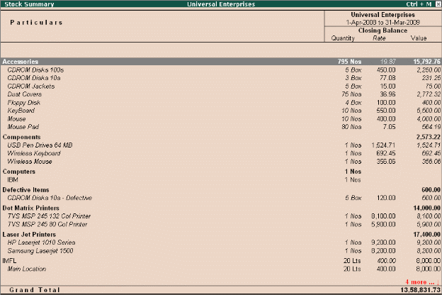</P>
<P STYLE="margin-right: 0.62in; margin-top: 0.08in; margin-bottom: 0.07in; line-height: 100%">
<FONT FACE="Arial, serif"><FONT SIZE=3><FONT COLOR="#000000"><B><FONT SIZE=3 STYLE="font-size: 11pt">4.3.2
Stock Category </FONT></B></FONT></FONT></FONT>
</P>
<P STYLE="margin-bottom: 0.14in">In many cases, you may want to
classify stock items which are similar in nature but are grouped
under different Stock Groups. Tally.ERP 9 provides you a feature
namely, <B>Stock Categories</B>, which allows parallel classification
of stock items to separate categories besides grouping.</P>
<P STYLE="margin-bottom: 0.14in">In Tally.ERP 9 you can create stock
items and group under the respective groups and parallely classify
them under the respective Stock Categories. You could however,
interchange the stock category or stock group based on your
convenience and reporting requirements.</P>
<P ALIGN=JUSTIFY STYLE="margin-top: 0.03in; margin-bottom: 0.07in; line-height: 100%">
<FONT FACE="Arial, serif"><FONT SIZE=3><FONT COLOR="#000000"><FONT SIZE=2 STYLE="font-size: 11pt">To
enable </FONT></FONT><FONT COLOR="#000000"><FONT SIZE=2 STYLE="font-size: 11pt"><B>Stock
categories</B></FONT></FONT><FONT COLOR="#000000"><FONT SIZE=2 STYLE="font-size: 11pt">,
</FONT></FONT></FONT></FONT>
</P>
<P STYLE="margin-bottom: 0.14in"><I>Go to </I><I><B>Gateway of Tally
&gt; F11: Inventory Features </B></I>
</P>
<P STYLE="margin-bottom: 0.14in">Set <B>Maintain Stock Categories
</B>to <B>Yes</B></P>
<P ALIGN=JUSTIFY STYLE="margin-top: 0.03in; margin-bottom: 0.07in; line-height: 100%">
<FONT FACE="Arial, serif"><FONT SIZE=3><FONT COLOR="#000000"><FONT SIZE=2 STYLE="font-size: 11pt">To
create </FONT></FONT><FONT COLOR="#000000"><FONT SIZE=2 STYLE="font-size: 11pt"><B>Stock
Categories</B></FONT></FONT><FONT COLOR="#000000"><FONT SIZE=2 STYLE="font-size: 11pt">,
</FONT></FONT></FONT></FONT>
</P>
<P STYLE="margin-bottom: 0.14in"><I>Go to </I><I><B>Gateway of Tally
&gt; Inventory Info. &gt; Stock Categories &gt; Create </B></I>
</P>
<P STYLE="margin-bottom: 0.14in">Specify the <B>Name </B>for the
<B>Category </B>
</P>
<P STYLE="margin-bottom: 0.14in">Select <B>Primary </B>or the
<B>parent </B>Stock Category from the list</P>
<P STYLE="margin-bottom: 0.14in"><BR><BR>
</P>
<P STYLE="margin-bottom: 0.14in"><FONT COLOR="#000000"><FONT SIZE=2 STYLE="font-size: 11pt">To
view </FONT></FONT><FONT COLOR="#000000"><FONT SIZE=2 STYLE="font-size: 11pt"><B>Stock
Category Report</B></FONT></FONT><FONT COLOR="#000000"><FONT SIZE=2 STYLE="font-size: 11pt">,
</FONT></FONT>
</P>
<P STYLE="margin-bottom: 0.14in"><I>Go to </I><I><B>Gateway of Tally
&gt; Display &gt; Statements of Inventory &gt; Categories </B></I><FONT FACE="Wingdings, serif"><FONT SIZE=1></FONT></FONT>Select
the required <B>Stock Category </B>or select <B>Primary </B>to
display all <B>Stock Categories</B></P>
<P STYLE="margin-bottom: 0.14in">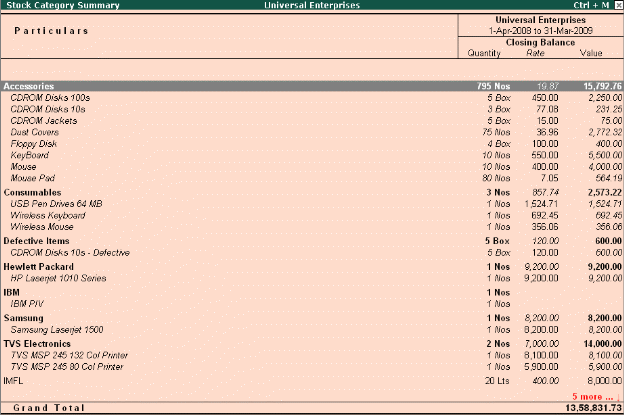</P>
<P STYLE="margin-right: 0.62in; margin-top: 0.08in; margin-bottom: 0.07in; line-height: 100%">
<FONT FACE="Arial, serif"><FONT SIZE=3><FONT COLOR="#000000"><B><FONT SIZE=3 STYLE="font-size: 11pt">4.4.1
Voucher Classes for Sales Invoice </FONT></B></FONT></FONT></FONT>
</P>
<P STYLE="margin-bottom: 0.14in">Voucher classes for invoices can be
used to significantly automate ledger entries where tax calculations,
additional charges, rounding off etc., are involved. You can also
specify percentages for additional accounting allocations like taxes,
freight and other charges. Based on the values / percentages entered,
the total amount is automatically calculated and prefilled in the
respective fields.</P>
<P STYLE="margin-bottom: 0.14in">To create <B>Voucher Class</B>, <I>Go
to </I><I><B>Gateway of Tally &gt; Accounts Info. &gt; Voucher Types
&gt; Alter</B></I></P>
<P STYLE="margin-bottom: 0.14in"> Select <B>Sales Voucher Type</B></P>
<P STYLE="margin-bottom: 0.14in"> Tab down to <B>Name of class
</B>field and specify the name</P>
<P STYLE="margin-bottom: 0.14in"> Select the required <B>groups
</B>under <B>Exclude these Groups </B>and <B>Include these Groups </B>
</P>
<P STYLE="margin-bottom: 0.14in">Specify the allocations in <B>%
</B>between <B>Sales </B>and <B>Tax Ledgers </B>in <B>Default
Accounting Allo-cations for each item in Invoice</B>.</P>
<P STYLE="margin-bottom: 0.14in"> Select additional Ledger
accounts which are involved in the voucher entry viz., Tax, Freight,
Discount etc., and specify the <B>type of calculation </B>and other
details in <B>Additional Accounting Entries</B></P>
<P STYLE="margin-bottom: 0.14in">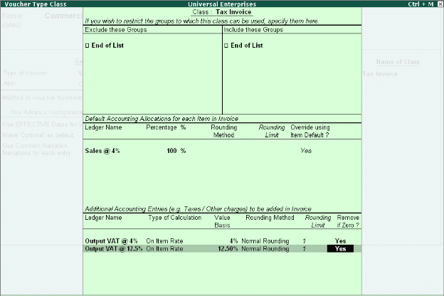</P>
<P STYLE="margin-bottom: 0.14in"><FONT COLOR="#000000"><FONT SIZE=2 STYLE="font-size: 11pt">To
enter transaction using </FONT></FONT><FONT COLOR="#000000"><FONT SIZE=2 STYLE="font-size: 11pt"><B>Voucher
Class</B></FONT></FONT><FONT COLOR="#000000"><FONT SIZE=2 STYLE="font-size: 11pt">,
</FONT></FONT>
</P>
<P STYLE="margin-bottom: 0.14in"><I>Go to </I><I><B>Gateway of Tally
&gt; Accounting Vouchers &gt; F8 (Sales)</B></I></P>
<P STYLE="margin-bottom: 0.14in"> Select the required <B>Voucher </B>
</P>
<P STYLE="margin-bottom: 0.14in">Select the required <B>Voucher
Class </B>from Voucher Class List 
</P>
<P STYLE="margin-bottom: 0.14in">Enter the <B>Party </B>and <B>Stock
Details </B>
</P>
<P STYLE="margin-bottom: 0.14in">The <B>Accounting allocations
</B>are automatically done, as defined in Voucher class 
</P>
<P STYLE="margin-bottom: 0.14in">Complete and save the
transaction</P>
<P STYLE="margin-top: 0.11in; margin-bottom: 0.07in; line-height: 100%">
<FONT FACE="Arial, serif"><FONT SIZE=3><FONT COLOR="#000000"><FONT SIZE=4><B>4.5
Separate Actual and Billed Quantities </B></FONT></FONT></FONT></FONT>
</P>
<P STYLE="margin-bottom: 0.14in">There are situations when you have
to invoice the customer for a particular quantity but actually supply
a different quantity. Tally.ERP 9 allows you to handle such
situations with the hlep of <B>Use different Actual and Billed Qty
</B>option. Using this option, you can specify different acutally and
billed quantities in the same invoice</P>
<P STYLE="margin-bottom: 0.14in"><FONT COLOR="#000000"><FONT SIZE=2 STYLE="font-size: 11pt">To
enable </FONT></FONT><FONT COLOR="#000000"><FONT SIZE=2 STYLE="font-size: 11pt"><B>Actual
and Billed Quantity </B></FONT></FONT><FONT COLOR="#000000"><FONT SIZE=2 STYLE="font-size: 11pt">in
Invoices, </FONT></FONT>
</P>
<P STYLE="margin-bottom: 0.14in">Press <B>F11: Inventory
Features</B>, set <B>Use different Actual and Billed Qty </B>to <B>Yes</B></P>
<P STYLE="margin-bottom: 0.14in">To enter <B>Actual and Billed
Quantity </B>in Invoices,</P>
<P STYLE="margin-bottom: 0.14in"> <I>Go to </I><I><B>Gateway of Tally
&gt; Accounting Vouchers &gt; F8 (Sales in Invoice mode) </B></I>
</P>
<P STYLE="margin-bottom: 0.14in"><B>Enter </B>quantities under
<B>Actual </B>and <B>Billed Qty </B>columns 
</P>
<P STYLE="margin-bottom: 0.14in">Specify the <B>Rate </B>&amp;
other details</P>
<P STYLE="margin-bottom: 0.14in"> Save transaction.</P>
<P STYLE="margin-top: 0.11in; margin-bottom: 0.07in; line-height: 100%">
<FONT FACE="Arial, serif"><FONT SIZE=3><FONT COLOR="#000000"><FONT SIZE=4><B>4.6
Gross Profits and Consumption Report </B></FONT></FONT></FONT></FONT>
</P>
<P STYLE="margin-bottom: 0.14in">Consumption basically means, the
quantity / value of materials used (consumed) in the process of
manufacturing, selling or written off. Tally.ERP 9 automatically
tracks the movement of materials consumed. You can view the
consumption report along with gross profit for every item.</P>
<P ALIGN=JUSTIFY STYLE="margin-top: 0.03in; margin-bottom: 0.07in; line-height: 100%">
<FONT FACE="Arial, serif"><FONT SIZE=3><FONT COLOR="#000000"><FONT SIZE=2 STYLE="font-size: 11pt">To
view </FONT></FONT><FONT COLOR="#000000"><FONT SIZE=2 STYLE="font-size: 11pt"><B>Consumption
Report</B></FONT></FONT><FONT COLOR="#000000"><FONT SIZE=2 STYLE="font-size: 11pt">,
</FONT></FONT></FONT></FONT>
</P>
<P STYLE="margin-bottom: 0.14in"><I>Go to </I><I><B>Gateway of Tally
&gt; Stock Summary &gt; F7 (Show Profits)</B></I></P>
<P STYLE="margin-bottom: 0.14in">Press <B>Alt+F1 </B>for detailed
mode</P>
<P STYLE="margin-bottom: 0.14in">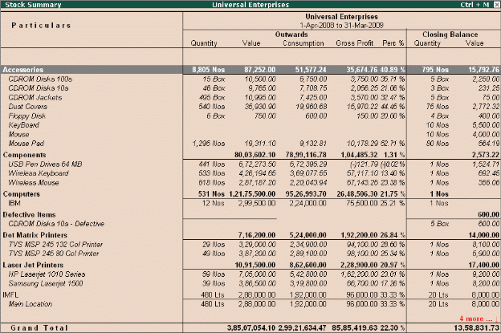</P>
<P STYLE="margin-bottom: 0.14in"><FONT COLOR="#000000"><FONT SIZE=4><B>4.7
Use Stock Item Names and / or Part Numbers </B></FONT></FONT>
</P>
<P STYLE="margin-bottom: 0.14in">Stock items can be created in
Tally.ERP 9 by specifying their actual names as well as by their Part
Numbers. This makes it convenient for many users dealing in certain
industries (like Computer/ Automobile Industries) where items are
generally identified by their Part Nos. You can also view reports for
all stock items with their actual names or by part numbers or both.</P>
<P ALIGN=JUSTIFY STYLE="margin-top: 0.03in; margin-bottom: 0.07in; line-height: 100%">
<FONT FACE="Arial, serif"><FONT SIZE=3><FONT COLOR="#000000"><FONT SIZE=2 STYLE="font-size: 11pt">To
create </FONT></FONT><FONT COLOR="#000000"><FONT SIZE=2 STYLE="font-size: 11pt"><B>Part
Number </B></FONT></FONT><FONT COLOR="#000000"><FONT SIZE=2 STYLE="font-size: 11pt">for
a Stock Item </FONT></FONT></FONT></FONT>
</P>
<P STYLE="margin-bottom: 0.14in"><I>Go to </I><I><B>Gateway of Tally
&gt; Inventory Info. &gt; Stock item &gt; Alter </B></I><I>(</I><I><B>Create</B></I><I>,
if the Item is not existing)</I></P>
<P STYLE="margin-bottom: 0.14in"> Select the required <B>Stock
item </B>
</P>
<P STYLE="margin-bottom: 0.14in">Press <B>F12: Configure </B>and
set <B>Use PART NUMBERS for Stock Items </B>to <B>Yes </B>
</P>
<P STYLE="margin-bottom: 0.14in">A new field <B>Part No </B>is
displayed in <B>Stock Item Creation/Alteration </B>screen</P>
<P STYLE="margin-bottom: 0.14in"> Specify the part numbers as well as
actual names for the stock items created/altered.</P>
<P STYLE="margin-bottom: 0.14in">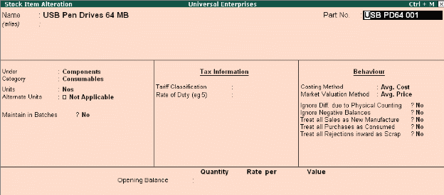</P>
<P ALIGN=JUSTIFY STYLE="margin-top: 0.03in; margin-bottom: 0.07in; line-height: 100%">
<FONT FACE="Arial, serif"><FONT SIZE=3><FONT COLOR="#000000"><FONT SIZE=2 STYLE="font-size: 11pt">To
view Stock reports with </FONT></FONT><FONT COLOR="#000000"><FONT SIZE=2 STYLE="font-size: 11pt"><B>Part
Number</B></FONT></FONT><FONT COLOR="#000000"><FONT SIZE=2 STYLE="font-size: 11pt">,
</FONT></FONT></FONT></FONT>
</P>
<P STYLE="margin-bottom: 0.14in"><I>Go to </I><I><B>Gateway of Tally
&gt; Stock Summary </B></I><I>(or any other Inventory reports)</I></P>
<P STYLE="margin-bottom: 0.14in"> Press <B>F12: Configure</B>,
and set <B>Appearance of Stock Item Names </B>as <B>Part No. Only </B>
</P>
<P STYLE="margin-bottom: 0.14in">Press <B>Enter </B>to save.</P>
<P STYLE="margin-bottom: 0.14in">Now the stock items are displayed as
Part Nos instead of their names.</P>
<P STYLE="margin-bottom: 0.14in"><BR><BR>
</P>
<P STYLE="margin-bottom: 0.14in"><BR><BR>
</P>
<P STYLE="margin-bottom: 0.14in">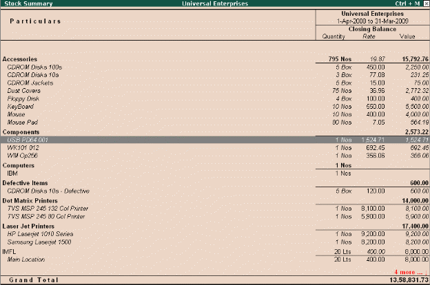</P>
<P STYLE="margin-top: 0.11in; margin-bottom: 0.07in; line-height: 100%">
<FONT FACE="Arial, serif"><FONT SIZE=3><FONT COLOR="#000000"><FONT SIZE=4><B>4.8
POS Invoicing </B></FONT></FONT></FONT></FONT>
</P>
<P STYLE="margin-bottom: 0.14in">A <B>Point of Sale </B>is either a
retail shop, a check-out counter in a shop or any other location
where sales transactions take place. Tally.ERP 9's POS feature is
fully integrated with Accounts and inventory functions. You can POS
Invoice with Cash and Credit/Debit card transactions and effec-tively
manage gift coupons, vouchers, discount coupons etc.</P>
<P ALIGN=JUSTIFY STYLE="margin-top: 0.03in; margin-bottom: 0.07in; line-height: 100%">
<FONT FACE="Arial, serif"><FONT SIZE=3><FONT COLOR="#000000"><FONT SIZE=2 STYLE="font-size: 11pt">To
activate </FONT></FONT><FONT COLOR="#000000"><FONT SIZE=2 STYLE="font-size: 11pt"><B>POS
Invoicing</B></FONT></FONT><FONT COLOR="#000000"><FONT SIZE=2 STYLE="font-size: 11pt">,
</FONT></FONT></FONT></FONT>
</P>
<P STYLE="margin-bottom: 0.14in"><I>Go to </I><I><B>Gateway of Tally
&gt; Accounts Info. &gt; Vouchers Type &gt; Create</B></I></P>
<P STYLE="margin-bottom: 0.14in"> Type <B>name </B>of the voucher
type 
</P>
<P STYLE="margin-bottom: 0.14in">Select <B>Sales </B>as voucher
type and other details 
</P>
<P STYLE="margin-bottom: 0.14in">Set <B>Use for POS Invoicing </B>to
<B>Yes</B></P>
<P STYLE="margin-bottom: 0.14in">Type the details in <B>Message 1
&amp; Message 2 </B>
</P>
<P STYLE="margin-bottom: 0.14in">Specify the details in <B>Default
Print Title </B>and save screen</P>
<P ALIGN=JUSTIFY STYLE="margin-top: 0.03in; margin-bottom: 0.07in; line-height: 100%">
<FONT FACE="Arial, serif"><FONT SIZE=3><FONT COLOR="#000000"><FONT SIZE=2 STYLE="font-size: 11pt">To
record </FONT></FONT><FONT COLOR="#000000"><FONT SIZE=2 STYLE="font-size: 11pt"><B>POS
transaction</B></FONT></FONT><FONT COLOR="#000000"><FONT SIZE=2 STYLE="font-size: 11pt">,
</FONT></FONT></FONT></FONT>
</P>
<P STYLE="margin-bottom: 0.14in"><I>Go to </I><I><B>Gateway of Tally
&gt; Accounting Vouchers &gt; F8: Sales </B></I>
</P>
<P STYLE="margin-bottom: 0.14in">Select <B>name </B>of the POS
Invoice <FONT FACE="Wingdings, serif"><FONT SIZE=1></FONT></FONT>Enter
details of the voucher <FONT FACE="Wingdings, serif"><FONT SIZE=1></FONT></FONT>Save
screen</P>
<P STYLE="margin-bottom: 0.14in">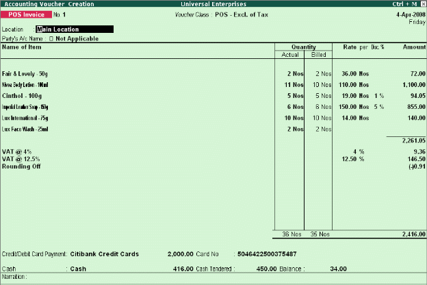</P>
<P ALIGN=JUSTIFY STYLE="margin-top: 0.03in; margin-bottom: 0.07in; line-height: 100%">
<FONT FACE="Arial, serif"><FONT SIZE=3><FONT COLOR="#000000"><FONT SIZE=2 STYLE="font-size: 11pt">To
view </FONT></FONT><FONT COLOR="#000000"><FONT SIZE=2 STYLE="font-size: 11pt"><B>POS
Register, </B></FONT></FONT></FONT></FONT>
</P>
<P STYLE="margin-bottom: 0.14in"><I>Go to </I><I><B>Gateway of Tally
&gt; Display &gt; Account Books &gt; POS Register </B></I>
</P>
<P STYLE="margin-bottom: 0.14in">You can view the sales made through
Gift Vouchers, Credit/Debit Card Payment, Cheque, Cash and Total
details.</P>
<P STYLE="margin-bottom: 0.14in"><BR><BR>
</P>
<P STYLE="margin-bottom: 0.14in"><BR><BR>
</P>
<P STYLE="margin-bottom: 0.14in"><BR><BR>
</P>
<P STYLE="margin-bottom: 0.14in"><BR><BR>
</P>
<P STYLE="margin-bottom: 0.14in"><BR><BR>
</P>
<P STYLE="margin-bottom: 0.14in"><BR><BR>
</P>
<P STYLE="margin-bottom: 0.14in"><BR><BR>
</P>
<P STYLE="margin-bottom: 0.14in"><BR><BR>
</P>
<P STYLE="margin-bottom: 0.14in"><BR><BR>
</P>
<P STYLE="margin-bottom: 0.14in"><FONT COLOR="#000000"><FONT SIZE=5 STYLE="font-size: 20pt"><B>Lesson
5: advanced Inventory Management</B></FONT></FONT></P>
<P STYLE="margin-top: 0.11in; margin-bottom: 0.07in; line-height: 100%">
<FONT FACE="Arial, serif"><FONT SIZE=3><FONT COLOR="#000000"><FONT SIZE=4><B>5.1
Stock Query </B></FONT></FONT></FONT></FONT>
</P>
<P STYLE="margin-bottom: 0.14in">Stock query offers an option for the
user to get a good idea of what is the stock position of a
par-ticular item as well as items that belong to the same category or
group. The stock query report displays not only the item but also
items within the same category or group. It displays the Stock Item
details such as closing stock quantities and value and also in which
Godown it is available, standard selling price, Last purchase and
sale quantity and prices, batch details.</P>
<P STYLE="margin-bottom: 0.14in">In <B>F12: Configure </B>screen of
the Stock Item, activate all the related parameters to <B>Yes</B></P>
<P STYLE="margin-bottom: 0.14in">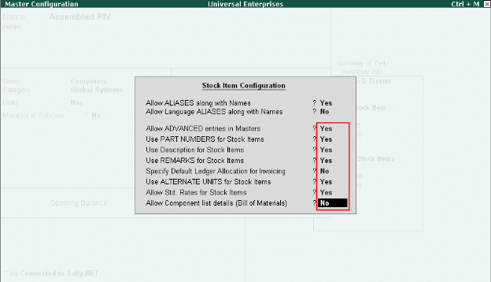<FONT COLOR="#000000"><FONT SIZE=2 STYLE="font-size: 11pt">To
view </FONT></FONT><FONT COLOR="#000000"><FONT SIZE=2 STYLE="font-size: 11pt"><B>Stock
Query Report</B></FONT></FONT><FONT COLOR="#000000"><FONT SIZE=2 STYLE="font-size: 11pt">,
</FONT></FONT>
</P>
<P STYLE="margin-bottom: 0.14in"><I>Go to </I><I><B>Gateway of Tally
&gt; Display &gt; Statements of Inventory &gt; Stock Query </B></I><FONT FACE="Wingdings, serif"><FONT SIZE=1></FONT></FONT>Select
<B>Item </B>from <B>List of Items</B>, the <B>Stock Query </B>report
will appear</P>
<P STYLE="margin-bottom: 0.14in"><BR><BR>
</P>
<P STYLE="margin-left: 1.61in; margin-bottom: 2.31in; line-height: 100%">
<BR><BR>
</P>
<P STYLE="margin-bottom: 0.14in"><BR><BR>
</P>
<P STYLE="margin-bottom: 0.14in">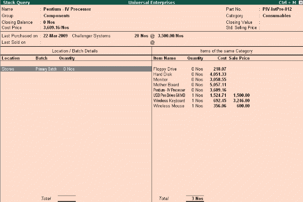</P>
<P STYLE="margin-bottom: 0.14in"> <FONT FACE="Arial, serif">Select
</FONT><FONT FACE="Arial, serif"><B>F4 (Item) </B></FONT><FONT FACE="Arial, serif">to
change to another item or use arrow keys to move to the category pane
to select another item displayed</FONT></P>
<P STYLE="margin-bottom: 0.14in">The <B>Stock Query </B>report
provides you all details of closing balances &amp; value, cost,
standard and last sale prices, purchase costs and dates. In addition,
activate these parameters in <B>F12: Configure </B>to see details
like Remarks, Part No with alias; 
</P>
<P STYLE="margin-bottom: 0.14in"><B>Show Related items of same
Group </B>to <B>Yes</B></P>
<P STYLE="margin-bottom: 0.14in"> <B>Show all Aliases of the item
</B>to <B>Yes </B>
</P>
<P STYLE="margin-bottom: 0.14in"><B>Show Remarks of the item </B>to
<B>Yes</B></P>
<P STYLE="margin-top: 0.11in; margin-bottom: 0.07in; line-height: 100%">
<FONT FACE="Arial, serif"><FONT SIZE=3><FONT COLOR="#000000"><FONT SIZE=4><B>5.2
Multiple Warehouses / Locations </B></FONT></FONT></FONT></FONT>
</P>
<P STYLE="margin-bottom: 0.14in">A Warehouse/Godown is a place where
stocks/materials are stored. It could be either locations or even
Storage racks. Your company could be maintaining multiple
warehouses/godowns and hence would require stock statements for the
individual warehouses. Tally.ERP 9 offers you the capability of
maintaining multiple Godowns/Locations (Warehouses). It allows you to
create multiple Godowns (warehouses) and at the time of accounting an
inventory transaction (sales, purchase, stock Journal etc), you can
specify Godowns for stock items to be stored or despatched.</P>
<P STYLE="margin-bottom: 0.14in"><FONT COLOR="#000000"><FONT SIZE=2 STYLE="font-size: 11pt">To
Enable </FONT></FONT><FONT COLOR="#000000"><FONT SIZE=2 STYLE="font-size: 11pt"><B>Multiple
Godowns</B></FONT></FONT><FONT COLOR="#000000"><FONT SIZE=2 STYLE="font-size: 11pt">,
</FONT></FONT>
</P>
<P STYLE="margin-bottom: 0.14in">Press <B>F11: Inventory
Features</B>, set <B>Maintain Multiple Godowns </B>to <B>Yes </B>To
create a <B>Godown</B>, <I>Go to </I><I><B>Gateway of Tally &gt;
Inventory Info. &gt; Godowns &gt; Create </B></I>
</P>
<P STYLE="margin-bottom: 0.14in">Enter <B>godown Name </B>and
other details <FONT FACE="Wingdings, serif"><FONT SIZE=1></FONT></FONT>Save
screen</P>
<P ALIGN=JUSTIFY STYLE="margin-top: 0.03in; margin-bottom: 0.07in; line-height: 100%">
<FONT FACE="Arial, serif"><FONT SIZE=3><FONT COLOR="#000000"><FONT SIZE=2 STYLE="font-size: 11pt">To
view </FONT></FONT><FONT COLOR="#000000"><FONT SIZE=2 STYLE="font-size: 11pt"><B>Godown
Summary Report</B></FONT></FONT><FONT COLOR="#000000"><FONT SIZE=2 STYLE="font-size: 11pt">,
</FONT></FONT></FONT></FONT>
</P>
<P STYLE="margin-bottom: 0.14in"><I>Go to </I><I><B>Gateway of Tally
&gt; Display &gt; Statements of Inventory &gt; Godowns</B></I></P>
<P STYLE="margin-bottom: 0.14in">Select any <B>Godown </B>or
<B>Primary </B>from the <B>List of Godowns </B>
</P>
<P STYLE="margin-bottom: 0.14in">Tally.ERP 9 displays <B>Stock
Summary </B>for that particular <B>Godown</B></P>
<P STYLE="margin-bottom: 0.14in">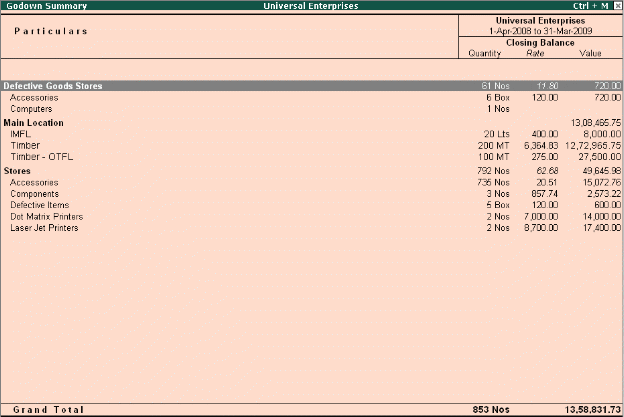</P>
<P STYLE="margin-bottom: 0.14in"><BR><BR>
</P>
<P STYLE="margin-bottom: 0.14in"><BR><BR>
</P>
<P STYLE="margin-bottom: 0.14in"><BR><BR>
</P>
<P STYLE="margin-bottom: 0.14in"><BR><BR>
</P>
<P STYLE="margin-top: 0.11in; margin-bottom: 0.07in; line-height: 100%">
<BR><BR>
</P>
<P STYLE="margin-top: 0.11in; margin-bottom: 0.07in; line-height: 100%">
<FONT FACE="Arial, serif"><FONT SIZE=3><FONT COLOR="#000000"><FONT SIZE=4><B>5.4
Stock transfers to Godowns </B></FONT></FONT></FONT></FONT>
</P>
<P STYLE="margin-bottom: 0.14in">Tally.ERP 9 allows you to transfer
materials from one Godown to another. The transfer of materials is
done using Stock Journals. Tally.ERP 9 also provides you the facility
to create voucher class, which help in simplifying the transfer of
materials between godowns.</P>
<P ALIGN=JUSTIFY STYLE="margin-top: 0.03in; margin-bottom: 0.07in; line-height: 100%">
<FONT FACE="Arial, serif"><FONT SIZE=3><FONT COLOR="#000000"><FONT SIZE=2 STYLE="font-size: 11pt">To
transfer materials (</FONT></FONT><FONT COLOR="#000000"><FONT SIZE=2 STYLE="font-size: 11pt"><B>Stock
Transfer</B></FONT></FONT><FONT COLOR="#000000"><FONT SIZE=2 STYLE="font-size: 11pt">),
</FONT></FONT></FONT></FONT>
</P>
<P STYLE="margin-bottom: 0.14in"><I>Go to </I><I><B>Gateway of Tally
&gt; Inventory Vouchers &gt; Alt+F7 (Stock Journal) </B></I><FONT FACE="Wingdings, serif"><FONT SIZE=1></FONT></FONT>Select
<B>Stock Item </B>in <B>Source column </B>and the <B>Godown
particulars </B><FONT FACE="Wingdings, serif"><FONT SIZE=1></FONT></FONT>Select
<B>Stock Item </B>and <B>Godown particulars </B>in <B>Destination
column</B></P>
<P STYLE="margin-bottom: 0.14in"><FONT COLOR="#000000"><FONT SIZE=2 STYLE="font-size: 11pt">To
transfer materials using </FONT></FONT><FONT COLOR="#000000"><FONT SIZE=2 STYLE="font-size: 11pt"><B>Voucher
Classes,</B></FONT></FONT></P>
<P STYLE="margin-bottom: 0.14in"><B>Step 1: Create Voucher Class </B><I>Go
to </I><I><B>Gateway of Tally &gt; Accounts Info./Inventory Info. &gt;
Voucher Types &gt; Alter </B></I>
</P>
<P STYLE="margin-bottom: 0.14in">Select <B>Stock Journal, </B>tab
down to <B>Name of Class </B>field and specify <B>Class </B>name
(e.g. <B>Godown Transfer</B>) <FONT FACE="Wingdings, serif"><FONT SIZE=1></FONT></FONT>Set
<B>Use Class for Inter-Godown Transfers </B>to <B>Yes </B>
</P>
<P STYLE="margin-bottom: 0.14in"><B>Step 2: Create Stock Transfer
Journal Voucher </B><I>Go to </I><I><B>Gateway of Tally &gt;
Inventory Vouchers &gt; Alt+F7 (Stock Journal) </B></I>
</P>
<P STYLE="margin-bottom: 0.14in">Select <B>Godown Transfer Class
</B>from <B>Voucher Class </B>List 
</P>
<P STYLE="margin-bottom: 0.14in">Select <B>Destination Godown
</B>details, stock items, Source Godown</P>
<P STYLE="margin-bottom: 0.14in">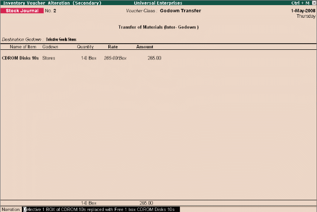</P>
<P STYLE="margin-top: 0.11in; margin-bottom: 0.07in; line-height: 100%">
<FONT FACE="Arial, serif"><FONT SIZE=3><FONT COLOR="#000000"><FONT SIZE=4><B>5.5
Multiple Stock Valuation </B></FONT></FONT></FONT></FONT>
</P>
<P STYLE="margin-bottom: 0.14in">In Tally.ERP 9, you can evaluate the
value of inventories using multiple Stock Valuation methods viz.,
Average Cost, Average price, Last Purchase cost, Last Sales price,
FIFO etc. Tally.ERP 9 offers you the flexibility to have different
stock valuation methods for every item or the entire stock of the
company which is valued based on the specific type of costing method,
chosen at the time of reporting. The user is allowed to view
different methods of stock valuations in multiple columns.</P>
<P ALIGN=JUSTIFY STYLE="margin-top: 0.03in; margin-bottom: 0.07in; line-height: 100%">
<FONT FACE="Arial, serif"><FONT SIZE=3><FONT COLOR="#000000"><FONT SIZE=2 STYLE="font-size: 11pt">To
set </FONT></FONT><FONT COLOR="#000000"><FONT SIZE=2 STYLE="font-size: 11pt"><B>Valuation
Method </B></FONT></FONT><FONT COLOR="#000000"><FONT SIZE=2 STYLE="font-size: 11pt">for
a stock item, </FONT></FONT></FONT></FONT>
</P>
<P STYLE="margin-bottom: 0.14in"><I>Go to </I><I><B>Gateway of Tally
&gt; Inventory Info. &gt; Stock Items &gt; Alter </B></I>
</P>
<P STYLE="margin-bottom: 0.14in">Select the <B>Stock Item </B>
</P>
<P STYLE="margin-bottom: 0.14in">Press <B>F12: Configure </B>and
set <B>Allow ADVANCED entries in Masters </B>to <B>Yes </B>
</P>
<P STYLE="margin-bottom: 0.14in">In <B>Stock Item Alteration</B>,
specify the required <B>Costing Method</B></P>
<P ALIGN=JUSTIFY STYLE="margin-top: 0.03in; margin-bottom: 0.07in; line-height: 100%">
<BR><BR>
</P>
<P ALIGN=JUSTIFY STYLE="margin-top: 0.03in; margin-bottom: 0.07in; line-height: 100%">
<FONT FACE="Arial, serif"><FONT SIZE=3><FONT COLOR="#000000"><FONT SIZE=2 STYLE="font-size: 11pt">To
view Stock Summary in different </FONT></FONT><FONT COLOR="#000000"><FONT SIZE=2 STYLE="font-size: 11pt"><B>Valuation
Methods</B></FONT></FONT><FONT COLOR="#000000"><FONT SIZE=2 STYLE="font-size: 11pt">,
</FONT></FONT></FONT></FONT>
</P>
<P STYLE="margin-bottom: 0.14in"><I>Go to </I><I><B>Gateway of Tally
&gt; Stock Summary </B></I>
</P>
<P STYLE="margin-bottom: 0.14in">Select <B>Auto Column (Alt+N)
</B>and select the required <B>Stock valuation </B>methods in <B>Auto
repeat columns</B>.</P>
<P STYLE="margin-bottom: 0.14in">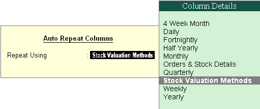</P>
<P STYLE="margin-top: 0.11in; margin-bottom: 0.07in; line-height: 100%">
<FONT FACE="Arial, serif"><FONT SIZE=3><FONT COLOR="#000000"><FONT SIZE=4><B>5.6
Batch-wise / Lot-wise &amp; Expiry Date Handling </B></FONT></FONT></FONT></FONT>
</P>
<P STYLE="margin-bottom: 0.14in">Tally.ERP 9 allows you to specify
the Batch/Lot details for stock items in order to identify and track
the required inventory, as and when required for any kind of
reference/verification/sale/query and so on. it also allows you to
specify the expiry dates and manufacturing dates for stock items.
This feature is extremely useful in Pharmaceutical, Chemical, Food
and other industries which deal in perishable / life saving items.
Additionally, you can ensure that expiry date items are not available
for invoicing.</P>
<P ALIGN=JUSTIFY STYLE="margin-top: 0.03in; margin-bottom: 0.07in; line-height: 100%">
<FONT COLOR="#000000"><FONT FACE="Arial, serif"><B>Step 1: Enable
Batchwise Details </B></FONT></FONT>
</P>
<P STYLE="margin-bottom: 0.14in"><FONT FACE="Arial, serif">To enable
Batchwise details for Stock Items, </FONT>
</P>
<P STYLE="margin-bottom: 0.14in"><FONT FACE="Arial, serif"><I>Go to
</I></FONT><FONT FACE="Arial, serif"><I><B>Gateway of Tally &gt; F11:
Inventory Features</B></I></FONT></P>
<P STYLE="margin-bottom: 0.14in"> <FONT FACE="Arial, serif">Set
</FONT><FONT FACE="Arial, serif"><B>Maintain Batch -wise details </B></FONT><FONT FACE="Arial, serif">to
</FONT><FONT FACE="Arial, serif"><B>Yes </B></FONT>
</P>
<P STYLE="margin-bottom: 0.14in"><FONT FACE="Arial, serif">Enable
</FONT><FONT FACE="Arial, serif"><B>Set Expiry Dates for Batches </B></FONT><FONT FACE="Arial, serif">to
</FONT><FONT FACE="Arial, serif"><B>Yes </B></FONT><FONT FACE="Arial, serif">(if
required)</FONT></P>
<P ALIGN=JUSTIFY STYLE="margin-top: 0.03in; margin-bottom: 0.07in; line-height: 100%">
<FONT COLOR="#000000"><FONT FACE="Arial, serif"><B>Step 2: Create
Batchwise Details </B></FONT></FONT>
</P>
<P STYLE="margin-bottom: 0.14in"><FONT FACE="Arial, serif">To specify
Batchwise details for Stock Items, </FONT><FONT FACE="Arial, serif"><I>Go
to </I></FONT><FONT FACE="Arial, serif"><I><B>Gateway of Tally &gt;
Inventory Info. &gt; Stock Item &gt; Create/Alter </B></I></FONT><FONT FACE="Wingdings, serif"><FONT SIZE=1></FONT></FONT><FONT FACE="Arial, serif">Specify
</FONT><FONT FACE="Arial, serif"><B>Stock Item Name </B></FONT><FONT FACE="Arial, serif">and
other details </FONT>
</P>
<P STYLE="margin-bottom: 0.14in"><FONT FACE="Arial, serif">Set
</FONT><FONT FACE="Arial, serif"><B>Maintain in Batches </B></FONT><FONT FACE="Arial, serif">to
</FONT><FONT FACE="Arial, serif"><B>Yes</B></FONT></P>
<P STYLE="margin-bottom: 0.14in"> <FONT FACE="Arial, serif">Set
</FONT><FONT FACE="Arial, serif"><B>Track Date of Mfg </B></FONT><FONT FACE="Arial, serif">to
</FONT><FONT FACE="Arial, serif"><B>Yes </B></FONT>
</P>
<P STYLE="margin-bottom: 0.14in"><FONT FACE="Arial, serif">Set
</FONT><FONT FACE="Arial, serif"><B>Use expiry dates </B></FONT><FONT FACE="Arial, serif">to
</FONT><FONT FACE="Arial, serif"><B>Yes</B></FONT></P>
<P STYLE="margin-bottom: 0.14in"> <FONT FACE="Arial, serif">Enter
Opening balance with Batch &amp; Rate details</FONT></P>
<P ALIGN=JUSTIFY STYLE="margin-top: 0.03in; margin-bottom: 0.07in; line-height: 100%">
<FONT COLOR="#000000"><FONT FACE="Arial, serif"><B>Step 3: Create
Vouchers using Batchwise </B></FONT></FONT>
</P>
<P STYLE="margin-bottom: 0.14in"><FONT FACE="Arial, serif">To create
voucher using </FONT><FONT FACE="Arial, serif"><B>Batchwise details</B></FONT><FONT FACE="Arial, serif">,
for example, while entering </FONT><FONT FACE="Arial, serif"><B>Purchase
entry</B></FONT><FONT FACE="Arial, serif">, </FONT><FONT FACE="Wingdings, serif"><FONT SIZE=1></FONT></FONT><FONT FACE="Arial, serif">Select
the </FONT><FONT FACE="Arial, serif"><B>Stock Item </B></FONT>
</P>
<P STYLE="margin-bottom: 0.14in"><FONT FACE="Arial, serif">Specify
the </FONT><FONT FACE="Arial, serif"><B>Batch No.</B></FONT><FONT FACE="Arial, serif">,
</FONT><FONT FACE="Arial, serif"><B>Mfg Date </B></FONT><FONT FACE="Arial, serif">and
</FONT><FONT FACE="Arial, serif"><B>Expiry Date </B></FONT><FONT FACE="Arial, serif">details</FONT></P>
<P STYLE="margin-left: 1.61in; margin-bottom: 2.31in; line-height: 100%">
<BR><BR>
</P>
<P STYLE="margin-top: 0.11in; margin-bottom: 0.07in; line-height: 100%">
<BR><BR>
</P>
<P ALIGN=JUSTIFY STYLE="margin-top: 0.03in; margin-bottom: 0.07in; line-height: 100%">
<FONT FACE="Arial, serif"><FONT SIZE=3><FONT COLOR="#000000"><FONT SIZE=2 STYLE="font-size: 11pt"><B>Step
4: Batchwise Reports</B></FONT></FONT></FONT></FONT></P>
<P ALIGN=JUSTIFY STYLE="margin-top: 0.03in; margin-bottom: 0.07in; line-height: 100%">
<FONT FACE="Arial, serif"><FONT SIZE=3><FONT COLOR="#000000"><FONT SIZE=2 STYLE="font-size: 11pt">To
view Stock Reports with </FONT></FONT><FONT COLOR="#000000"><FONT SIZE=2 STYLE="font-size: 11pt"><B>Batchwise
details</B></FONT></FONT><FONT COLOR="#000000"><FONT SIZE=2 STYLE="font-size: 11pt">,
</FONT></FONT></FONT></FONT>
</P>
<P STYLE="margin-bottom: 0.14in"><I>Go to </I><I><B>Gateway of Tally
&gt; Stock Summary </B></I>
</P>
<P STYLE="margin-bottom: 0.14in">Press <B>F12: Configure</B>, set
<B>Expand all levels in Detailed Format </B>to <B>Yes </B>and save
the screen 
</P>
<P STYLE="margin-bottom: 0.14in">Press <B>Alt + F1 </B>for
detailed mode, Tally.ERP 9 displays all stock items along with their
batch details.</P>
<P ALIGN=JUSTIFY STYLE="margin-top: 0.03in; margin-bottom: 0.07in; line-height: 100%">
<FONT FACE="Arial, serif"><FONT SIZE=3><FONT COLOR="#000000"><FONT SIZE=2 STYLE="font-size: 11pt"><B>Step
5: Expiry Reports</B></FONT></FONT></FONT></FONT></P>
<P ALIGN=JUSTIFY STYLE="margin-top: 0.03in; margin-bottom: 0.07in; line-height: 100%">
<FONT FACE="Arial, serif"><FONT SIZE=3><FONT COLOR="#000000"><FONT SIZE=2 STYLE="font-size: 11pt">To
view Stock Reports with </FONT></FONT><FONT COLOR="#000000"><FONT SIZE=2 STYLE="font-size: 11pt"><B>Expiry
dates</B></FONT></FONT><FONT COLOR="#000000"><FONT SIZE=2 STYLE="font-size: 11pt">,
</FONT></FONT></FONT></FONT>
</P>
<P STYLE="margin-bottom: 0.14in"><I>Go to </I><I><B>Gateway of Tally
&gt; Display &gt; Inventory Books &gt; Ageing Analysis</B></I></P>
<P STYLE="margin-bottom: 0.14in"> Select <B>stock group </B>and
press <B>Enter</B></P>
<P STYLE="margin-bottom: 0.14in"> The <B>Stock Ageing Analysis
</B>report displays stocks with expiry date particulars</P>
<P STYLE="margin-top: 0.11in; margin-bottom: 0.07in; line-height: 100%">
<FONT FACE="Arial, serif"><FONT SIZE=3><FONT COLOR="#000000"><FONT SIZE=4><B>5.7
Sales and Purchase Order Processing </B></FONT></FONT></FONT></FONT>
</P>
<P STYLE="margin-bottom: 0.14in">Tally.ERP 9 facilitates Order
processing right from placing the order for supply of materials and
receiving an order from the customers. It provides all the required
vouchers, features and options to process Purchase Orders as well as
Sales Orders. Using the Order Processing functionality of Tally.ERP
9, you can also generate reports for outstanding purchase and sales
orders. You may also e-mail the PO to suppliers from within Tally.ERP
9 using e-mail option.</P>
<P ALIGN=JUSTIFY STYLE="margin-top: 0.03in; margin-bottom: 0.07in; line-height: 100%">
<FONT COLOR="#000000"><FONT FACE="Arial, serif"><B>Step 1: Enable
Order Processing </B></FONT></FONT>
</P>
<P STYLE="margin-bottom: 0.14in"><FONT FACE="Arial, serif">To enable
</FONT><FONT FACE="Arial, serif"><B>Order Processing</B></FONT><FONT FACE="Arial, serif">,
</FONT><FONT FACE="Arial, serif"><I>Go to </I></FONT><FONT FACE="Arial, serif"><I><B>Gateway
of Tally &gt; F11: Inventory Features </B></I></FONT>
</P>
<P STYLE="margin-bottom: 0.14in"><FONT FACE="Arial, serif">Set
</FONT><FONT FACE="Arial, serif"><B>Allow Purchase Order Processing
</B></FONT><FONT FACE="Arial, serif">to </FONT><FONT FACE="Arial, serif"><B>Yes
</B></FONT>
</P>
<P STYLE="margin-bottom: 0.14in"><FONT FACE="Arial, serif">Set
</FONT><FONT FACE="Arial, serif"><B>Allow Sales Order Processing </B></FONT><FONT FACE="Arial, serif">to
</FONT><FONT FACE="Arial, serif"><B>Yes</B></FONT></P>
<P ALIGN=JUSTIFY STYLE="margin-top: 0.03in; margin-bottom: 0.07in; line-height: 100%">
<FONT COLOR="#000000"><FONT FACE="Arial, serif"><B>Step 2: Create
Purchase Order </B></FONT></FONT>
</P>
<P STYLE="margin-bottom: 0.14in"><FONT FACE="Arial, serif"><I>Go to
</I></FONT><FONT FACE="Arial, serif"><I><B>Gateway of Tally &gt;
Inventory Vouchers &gt; Alt+F4 (Purc Order)</B></I></FONT></P>
<P STYLE="margin-bottom: 0.14in"><FONT FACE="Arial, serif">Select
</FONT><FONT FACE="Arial, serif"><B>Party's Name </B></FONT><FONT FACE="Arial, serif">from
</FONT><FONT FACE="Arial, serif"><B>List of Ledger </B></FONT><FONT FACE="Arial, serif">Accounts
</FONT>
</P>
<P STYLE="margin-bottom: 0.14in"><FONT FACE="Arial, serif">Enter
</FONT><FONT FACE="Arial, serif"><B>Order No</B></FONT><FONT FACE="Arial, serif">.</FONT></P>
<P STYLE="margin-bottom: 2.31in; line-height: 100%"><FONT FACE="Arial, serif"><FONT SIZE=3><FONT SIZE=2 STYLE="font-size: 11pt">Similarly,
you can also create Sales Orders for orders received from Customers,
by pressing (</FONT><FONT SIZE=2 STYLE="font-size: 11pt"><B>Alt+F5</B></FONT><FONT SIZE=2 STYLE="font-size: 11pt">)
voucher entry screen.</FONT></FONT></FONT></P>
<P STYLE="margin-bottom: 0.14in"><BR><BR>
</P>
<P STYLE="margin-top: 0.11in; margin-bottom: 0.07in; line-height: 100%">
<BR><BR>
</P>
<P STYLE="margin-top: 0.11in; margin-bottom: 0.07in; line-height: 100%">
<BR><BR>
</P>
<P STYLE="margin-left: 1.61in; margin-bottom: 2.31in; line-height: 100%">
<BR><BR>
</P>
<P STYLE="margin-top: 0.11in; margin-bottom: 0.07in; line-height: 100%">
<BR><BR>
</P>
</BODY>
</HTML>